There are also certain, fascinating similarities between the near-death experience and its results, and mystical states and altered states of consciousness. For example, a number of para-normal phenomena have been reported by the near-death experiencers. Some have precognitive or prophetic planetary visions, or "life previews," that turn out to be uncannily accurate; after the near-death experience, some report experiences of what appears to be the energy of kundalini,37 others find they have real and amazing powers of clairvoyance, or psychic or physical healing.
Many of those who have come near death speak in a personal, undeniably eloquent way of the beauty, love, peace and bliss and wisdom of what they have experienced. To me this sounds like they have had certain glimpses of the radiance of the nature of mind, and it is hardly surprising that such glimpses should have resulted in true spiritual transformation, again and again. Yet as Margot Grey points out, "We do not need nearly to die in order to experience a higher spiritual reality."38 That higher spiritual reality is here and now, in life, if only we can discover and enter it.
I would like to make one essential caution: Don't let these accounts of the near-death experience, which are so inspiring, lull you into believing that all you have to do in order to dwell in such states of peace and bliss is to die. It is not, and could not be, that simple.
Sometimes when people are going through suffering and pain, they feel they cannot bear it anymore; and hearing the near-death stories might, it is conceivable, tempt them to put an end to it all by taking their lives. This might seem like a simple solution, but it overlooks the fact that whatever we go through is part of life. It's impossible to run away. If you run away, you will only come to face your suffering in an even deeper way later on.
Besides, while it is true that the majority of near-death experiences that have been collected have been good ones, there is still some speculation as to whether this reflects the actual rarity of negative, terrifying experiences, or merely the difficulty in recollecting them. People may not want or consciously be able to remember the darker or more frightening experiences. Also the near-death experiencers themselves stress that what they have learned is the importance of transforming our lives now, while we are still alive, for we have, they say "a more important mission while we're here."39
This transformation of our lives now is the urgent and essential point. Wouldn't it be tragic if this central message of the near-death experience—that life is inherently sacred and must be lived with sacred intensity and purpose—was obscured and lost in a facile romanticizing of death? Wouldn't it be even more tragic if such a facile optimism further deepened that disregard for our actual responsibilities to ourselves and our world that is menacing the survival of the planet?
THE MEANING OF THE NEAR-DEATH EXPERIENCE
Inevitably some have tried to show that the events of the near-death experience constitute something other than a spiritual experience, and reductionist scientists have tried to explain it away in terms of physiological, neurological, chemical, or psychological effects. The near-death experience researchers, however, doctors and scientists themselves, have countered these objections lucidly one by one, and insist that they cannot explain the whole of the near-death experience. As Melvin Morse writes at the end of his magnificent book Closer to the Light: Learning from Children's Near-Death Experiences:
But near-death experiences appear to be a cluster of events so that one cannot understand the total by looking at its various pieces.
One cannot understand music by studying the various frequencies of sound that generate each note, nor does one need to have a deep understanding of acoustical physics to enjoy Mozart. The near-death experience remains a mystery40
Melvin Morse also says:
I feel that just understanding near-death experiences will be our first step at healing the great division between science and religion that started with Isaac Newton almost three hundred years ago.
Educating physicians, nurses, and ourselves about what people experience in those final hours will shatter our prejudices about the ways we think about medicine and life.41
In other words the very advance in medical technology is simultaneously providing the means to revolutionize itself.
Melvin Morse says:
I find it ironic that it is our medical technology that has led to this plethora of near-death experiences. There have been near-death experiences throughout the centuries, but it has only been in the last twenty years that we have had the technology to resuscitate patients. Now they are telling us about their experiences, so let's listen to them. This to me is a challenge for our society... Near-death experiences, to my mind, are a natural, psychological process associated with dying. I'm going to boldly predict if we can reintegrate this knowledge into our society, not only will it help with dying patients, but it will help society as a whole. I see medicine today as being devoid of spirit.... There is no reason why technology and the spirit cannot exist side by side.42
One of the reasons I have written this book is to show I believe what Melvin Morse says is possible: Technology and the spirit can and must exist side by side, if our fullest human potential is to be developed. Wouldn't a complete, and completely useful, human science have the courage to embrace and explore the facts of the mystical, the facts of death and dying as revealed in the near-death experience and in this book?
Bruce Greyson, one of the leading figures in near-death research, says:
Science must try to explain the near-death experience because therein lies the key to its own growth.... History tells us that only in trying to explain phenomena which are currently beyond our reach will science develop new methods. I believe the near-death experience is one of the puzzles that just might force scientists to develop a new scientific method, one that will incorporate all sources of knowledge, not only logical deduction of the intellect, and empirical observation of the physical, but direct experience of the mystical as well.43
340 THE TIBETAN BOOK OF LIVING AND DYING
Bruce Greyson has also said he believes near-death experiences occur for a reason: "Based on my watching near-death experiences for a number of years, I think that we have these experiences in order to learn how to help others."
Kenneth Ring sees yet another extraordinary possibility and meaning to the near-death experiences. He asks why so many people are now having such experiences and going through spiritual transformation at this time. For many years one of the bravest pioneers in the field of near-death research, he has come to see the near-death experiencers as being "messengers of hope," speaking of a higher and more noble spiritual reality, and calling us to change urgently every facet of how we live now; to end all war, all divisions between religions and peoples, and to protect and save the environment:
I believe . . . that humanity as a whole is collectively struggling to awaken to a newer and higher mode of consciousness,... and that the near-death experience can be viewed as an evolutionary device to bring about this transformation, over a period of years, in millions of persons.44
It may be that whether this is true or not depends on all of us: on whether we really have the courage to face the implications of the near-death experience and the bardo teachings, and by transforming ourselves transform the world around us, and so by stages the whole future of humanity.
PART FOUR
Conclusion
TWENTY-ONE
The Universal Process
FORTY YEARS AFTER the Chinese occupation of Tibet, the world is still ignorant of what has happened, ignorant of the extent of the terror, destruction, and systematic genocide that the Tibetan people have endured and are still enduring.
Over 1 million people out of a population of 6 million have died at the hands of the Chinese; Tibet's vast forests, as indispensable as those of the Amazon to the ecology of the world, have been cut down; its wildlife has been almost totally mas-sacred; its plateaus and rivers have been polluted with nuclear waste; the vast majority of its six-and-a-half thousand monasteries lie gutted or destroyed; the Tibetan people face extinction, and the glory of their own culture in their homeland has been almost entirely obliterated.
From the very beginning of the Chinese occupation of Tibet in the 1950s, many terrible atrocities were committed. Spiritual masters, monks, and nuns were the first targets, because the Chinese Communists wanted above all to break the spirit of the people by wiping out all traces of religious life. Many, many stories have reached me over the years of extraordinary and moving deaths, in the worst possible circumstances, that witnessed and paid final tribute to the splendor of the truth the Chinese were desperate to destroy.
In the part of Tibet I come from, the province of Kham, there was an old khenpo, or abbot, who had spent many years in retreat in the mountains. The Chinese announced that they were going to "punish" him, which everyone knew meant torture and death, and sent a detachment of soldiers to his hermitage to arrest him. The khenpo was elderly and unable to walk, and the Chinese found him an old and mangy horse for his last journey. They sat him on the horse, tied him to it, and led the horse down the path from his hermitage to the army camp. The khenpo began to sing. The Chinese could not 343 understand the words, but the monks who were taken with him said later that he was singing "songs of experience," beautiful songs that sprang spontaneously from the depth and the joy of his realization. Slowly the party wound its way down the mountain, the soldiers in a stony silence and many of the monks sobbing; the khenpo, however, sang all the way.
Not long before the party arrived at the army camp, he stopped singing and closed his eyes, and the group then moved on in silence. As they crossed through the gate into the camp, they found the khenpo had passed away. He had quietly left his body.
What did he know that made him so serene, even in the face of death? What gave him even in those final moments the joy and fearlessness to sing? Perhaps he was singing something like these verses from "The Immaculate Radiance," the last tes-tament of the fourteenth-century Dzogchen master Longchenpa: In a cloudless night sky, the full moon,
"The Lord of Stars is about to rise ...
The face of my compassionate lord, Padmasambhava, Draws me on, radiating its tender welcome.
My delight in death is far, far greater than The delight of traders at making vast fortunes at sea, Or the lords of the gods who vaunt their victory in battle; Or of those sages who have entered the rapture of perfect absorption.
So just as a traveler who sets out on the road when the time has come to go,
I will not remain in this world any longer, But will go to dwell in the stronghold of the great bliss of deathlessness.
This, my life, is finished, my karma is exhausted, what benefit prayers could bring has worn out,
All worldly things are done with, this life's show is over.
In one instant, I will recognize the very essence of the manifestation of my being
In the pure, vast realms of the bardo states; I am close now to taking up my seat in the ground of primordial perfection.
The riches found in myself have made the minds of others happy, I have used the blessing of this life to realize all the benefits of the island of liberation;
Having been with you, my noble disciples, through all this time, The joy of sharing the truth has filled me and satisfied me.
Now all the connections in this life between us are ending, I am an aimless beggar who is going to die as he likes, Do not feel sad for me, but go on fraying always.
These words are my heart talking, talking to help you; Think of them as a cloud of lotus-blossoms, and you in your devotion as bees plunging into them to suck from them their transcendent joy.
Through the great good of these words
May the beings of all the realms of samsara, In the ground of primordial perfection, attain nirvana.
These are unmistakably the words of someone who has achieved the highest realization with all that it can bring: that joy and fearlessness and freedom and understanding that are the goal of the teachings and of human life. I think of masters like Longchenpa, and my own masters Jamyang Kbyentse, Dudjom Rinpoche, Dilgo Khyentse Rinpoche, and I imagine beings who have their depth of realization as magnificent mountain eagles, who soar above both life and death and see them for what they are, in all their mysterious, intricate interrelation.
To see through the eyes of the mountain eagle, the view of realization, is to look down on a landscape in which the boundaries that we imagined existed between life and death shade into each other and dissolve. The physicist David Bohm has described reality as being "unbroken wholeness in flowing movement." What is seen by the masters, then, seen directly and with total understanding, is that flowing movement and that unbroken wholeness. What we, in our ignorance, call
"life," and what we, in our ignorance, call "death", are merely different aspects of that wholeness and that movement. This is the vast and transforming vision opened up to us by the bardo teachings, and embodied in the lives of the supreme masters.
THE REVELATION OF THE BARDOS
To see death, then, through realized eyes, is to see death in the context of this wholeness, and as part, and only part, of this beginningless and endless movement. The uniqueness and power of the bardo teachings is that they reveal to us, by 3 4 6 THE TIBETAN BOOK OF LIVING AND DYING
showing with total clarity the actual process of death, the actual process of life as well.
Let us look now again at what happens to a person who dies, at each of the three crucial stages of death: 1. At the culmination of the process of dying, after the dissolution of elements, senses, and thought states, the ultimate nature of mind, the Ground Luminosity, is for a moment laid bare.
2. Then, fleetingly, the radiance of that nature of mind is displayed and shines out in appearances of sound, colors, and light.
3. Next the dead person's consciousness awakens and enters into the bardo of becoming; his or her ordinary mind returns, and takes on a manifestation—the form of the mental body—subject to the dictates of past karma and habits. These drive the ordinary mind to cling onto the illusory bardo experiences as something real and solid.
So what do the bardo teachings show us that death is?
Nothing less than three phases of a process of gradual manifestation of mind: from out of its very purest state of the essential nature of mind, through light and energy (the radiance of the nature of mind), and into increasing crystallization into a mental form. What unravels with such clarity in the bardo of dying, the bardo of dharmata, and the bardo of becoming, the teachings show us, is a threefold process: first, enfoldment leading to laying bare; second, spontaneous radiance; and third, crystallization and manifestation.
The teachings draw us to go further. What they in fact show us—and I think this is a truly revolutionary insight, one that, when it is understood, changes our view of everything—
is that this threefold pattern does not only unfold in the process of dying and death: It is unfolding now, at this moment, at every moment, within our mind, in our thoughts and emotions, and at every single level of our conscious experience.
Another way the teachings offer us of understanding this process is by looking at what is revealed at each phase of dying and death. The teachings speak of three levels of being, to which the Sanskrit name kaya is given. This word kaya literally means "body," but signifies here dimension, field, or basis.
So let us look now at the threefold process from this perspective:
1. The absolute nature, uncovered at the moment of death in the Ground Luminosity, is called the Dharmakaya, the dimension of "empty," unconditioned truth, into which illusion and ignorance, and any kind of concept, have never entered.
2. The intrinsic radiance of energy and light that is spontaneously displayed in the bardo of dharmata is called Sambhogakaya, the dimension of complete enjoyment, the field of total plenitude, of full richness, beyond all dualistic limitations, beyond space or time.
3. The sphere of crystallization into form revealed in the bardo of becoming is called Nirmanakaya, the dimension of ceaseless manifestation.
Remember now that when we looked at the nature of mind, we saw that it had these three same aspects: its empty, skylike essence, its radiant luminous nature, and its unobstructed, all-pervasive, compassionate energy, which are all simultaneously present and interpenetrating as one within the Rigpa. Padmasambhava describes this in the following way: Within this Rigpa, the three kayas are inseparable and fully present as one:
Since it is empty and not created anywhere whatsoever, it is the Dharmakaya,
Since its luminous clarity represents the inherent transparent radiance of emptiness, it is the Sambhogakaya.
Since its arising is nowhere obstructed or interrupted, it is the Nirmanakaya.
These three being complete and fully present as one, are its very essence.
The three kayas, then, refer to these three intrinsic aspects of our enlightened mind; they also, of course, refer to different capacities of our perception. The vast majority of us are limited in our vision, and only perceive the Nirmanakaya dimension of form and manifestation. This is the reason that for most of us the moment of death is a blank and a state of oblivion, for we have neither encountered nor evolved any way of recognizing the Dharmakaya reality when it arises as the Ground Luminosity. Nor do we have any hope of recognizing the Sambhogakaya fields as they appear in the bardo of dharmata. Because our entire life has been lived out within the realm of the impure perceptions of the Nirmanakaya manifestation, so at the moment of death we are transported direcdy back into that dimension; we awaken, frantic and distracted, in the bardo of becoming in the mental body, taking illusory experiences for solid and real just as we have in lives before, and stumbling helplessly, propelled by past karma, toward rebirth.
Highly realized beings, however, have awakened in themselves a perception completely different from our own, one that is purified, evolved, and refined to such an extent that, while they still dwell in a human body, they actually perceive reality in a totally purified form, transparent to them in all its limitless dimension. And for them, as we have seen, the experience of death holds no fear or surprises; it is embraced, in fact, as an opportunity for final liberation.
THE PROCESS IN SLEEP
The three phases of the process we see unfolding in the bardo states in death can be perceived in other levels of consciousness in life also. Consider them in the light of what occurs in sleep and dream:
1. When we fall asleep, the senses and grosser layers of consciousness dissolve, and gradually the absolute nature of mind, we could say the Ground Luminosity, is briefly laid bare.
2. Next there is a dimension of consciousness, comparable to the bardo of dharmata, that is so subtle that we are normally completely unaware of its very existence. How many of us, after all, are aware of the moment of sleep before dreams begin?
3. For most of us, all that we are aware of is the next stage, when the mind becomes yet again active, and we find ourselves in a dream-world similar to the bardo of becoming.
Here we take on a dream-body and go through different dream-experiences to a great extent influenced and shaped by the habits and activities of our waking state, all of which we believe to be solid and real, without ever realizing that we are dreaming.
THE PROCESS IN THOUGHTS AND EMOTIONS
Exactly the same process can be recognized in the workings of thoughts and emotions, and the manner in which they arise:
THE UNIVERSAL PROCESS 3 4 9
1. The Ground Luminosity, the absolute nature of mind, is the primordial state of Rigpa that exists before any thought or emotion.
2. Within its unconditioned space, a fundamental energy stirs, the spontaneous radiance of Rigpa, which begins to arise as the basis, the potential, and the fuel for raw emotion.
3. This energy can then take on the forms of emotions and thoughts, which eventually propel us into action and cause us to accumulate karma.
It is when we become intimately familiar with meditation practice that we can see this process with unmistakable clarity: 1. As thoughts and emotions gradually fall silent, and die away and dissolve into the nature of mind, we may momentarily glimpse the nature of mind, the Rigpa itself: the primordial state.
2. Then we become aware that out of the stillness and calm of the nature of mind unfolds a movement and raw energy, its very self-radiance.
3. If any grasping enters into the rising of that energy, the energy inevitably crystallizes into thought forms, which in turn will carry us back into conceptual and mental activity.
THE PROCESS IN EVERYDAY LIFE
Now that we have looked at the way this process reproduces itself in sleep and dream, and the very formation of thought and emotion, let us see it at work in our day-to-day experience of our everyday life.
This is best done by looking closely at one movement of joy or anger. Examine that movement and you will see that there exists always a space or gap before any emotion begins to arise. That pregnant moment before the energy of emotion has a chance to arise is a moment of pure, pristine awareness, in which we could, if we let ourselves, have a glimpse of the true nature of mind. For an instant the spell of ignorance is broken; we are totally freed from any need or possibility of grasping, and even the notion of "clinging" is made ridiculous and redundant. However, instead of embracing the "emptiness" of that gap, in which we could find the bliss of being free from and unburdened by any idea, reference, or concept, we grasp at the dubious security of the familiar, comforting drama of our emotions, driven by our deep habitual tendencies. And this is how an inherently unconditioned energy 350 THE TIBETAN BOOK OF LIVING AND DYING
arising from the nature of mind is crystallized into the form of an emotion, and how its fundamental purity is then colored and distorted by our samsaric vision to provide a continuous source of everyday distractions and delusions.
If we really examine every aspect of our life, as I have shown, we will discover how we go through, again and again, in sleep and dream, in thoughts and emotions, that same process of the bardos. And the teachings reveal to us that it is precisely this fact—that we go through the process of the bardos again and again, in both life and death, and at all the different levels of consciousness—that gives us innumerable opportunities, now and also in death, for liberation. The teachings show us that it is the character, form, and uniqueness of the process that offer us either the chance for liberation or the potential for continuing in confusion. For every aspect of the whole process hands us at the same time the chance for liberation, or the chance for confusion.
The bardo teachings are opening a door to us, showing us how we can step out of the uncontrolled cycle of death and rebirth, the repetitive treadmill of ignorance, life after life. They are telling us that throughout this process of the bardos of life and death, whenever we can recognize and maintain a stable awareness of the nature of mind, Rigpa, or even when we can gain some measure of control over our mind, we can walk through that door toward liberation.
Depending on the phase of the bardos it is applied in, depending on your familiarity with the View of the nature of mind itself, and depending on the depth of your understanding of your mind, its thoughts and emotions, this recognition will be different.
What the bardo teachings are also telling us, however, is that what happens in our mind now in life is exactly what will occur in the bardo states at death, since essentially there is no difference; life and death are one in "unbroken wholeness" and "flowing movement." This is w h y one of the most accomplished Tibetan masters of the seventeenth century, Tsele Natsok Rangdrol, explains the heart practices for each of the bardos—this life, dying, dharmata, and becoming—in terms of the state of our present understanding of the nature of thoughts and emotions, and of mind and its perceptions:
Recognize this infinite variety of appearances as a dream, As nothing but the projections of your mind, illusory and unreal.
Without grasping at anything, rest in the wisdom of your Rigpa, that transcends all concepts:
This is the heart of the practice for the bardo of this life.
You are bound to die soon, and nothing then will be of any real help.
What you experience in death is only your own conceptual thinking.
Without fabricating any thoughts, let them all die into the vast expanse of your Rigpa's self-awareness:
This is the heart of the practice for the bardo of dying.
Whatever grasps at appearance or disappearance, as being good or bad, is your mind.
And this mind itself is the self-radiance of the Dharmakaya, just whatever arises.
Not to cling to the risings, make concepts out of them, accept or reject them:
This is the heart of the practice for the bardo of dharmata.
Samsara is your mind, and nirvana is also your mind, All pleasure and pain, and all delusions exist nowhere apart from your mind.
To attain control over your own mind;
This is the heart of the practice for the bardo of becoming.
We are now ready to look at one particular bardo, to see how our meditation practice, our understanding of emotions and thoughts, and our experiences in that bardo are all inextricably interlinked, and how our experiences in that bardo reflect back into our ordinary life. Perhaps the most helpful bardo to study is the bardo of dharmata, which is where the pure energy that will become emotion begins to emerge spontaneously as the intrinsic radiance of the nature of mind; and emotions, I know, are a main, almost obsessive preoccupation of people in the modern world. Truly to understand the nature of emotion is to advance very far on the path to liberation.
The deepest aim of meditation is to be able to rest, undistracted, in the state of Rigpa, and with that View to realize that whatever arises in the mind is never anything but the display of your own Rigpa, just as the sun and its million rays are one and indivisible. As Tsele Natsok Rangdrol says in his verse for the bardo of dharmata: "Whatever grasps at appearance or disappearance, as being good or bad, is your mind. And this mind itself is the self-radiance of the Dharmakaya . . . "
So when you are in the state of Rigpa, and when thoughts and emotions arise, you recognize exactly what they are and where they are springing from: then whatever arises becomes the self-radiance of that wisdom. If you lose the presence of that pristine, pure awareness of Rigpa, however, and you fail to recognize whatever arises, then it will become separate from you. It goes on to form what we call "thought," or an emotion, and this is the creation of duality. To avoid this and its consequences is why Tsele Natsok Rangdrol says: "Not to cling to the risings, make concepts out of them, accept or reject them: this is the heart of the practice for the bardo of dharmata."
That separateness, between you and the risings in your mind, and the duality it engenders, become spectacularly magnified after death. This explains how, without that essence of recognition of the true nature of the arisings within the mind, in the bardo of dharmata the sounds, lights, and rays that manifest can take on the objective reality of shocking, external phenomena that are happening to you. So what could you possibly do in such a situation but flee from the brilliant radiance of the peaceful and wrathful deities, and run to the dim, seductive, habitual lights of the six realms? The crucial recognition, then, in the bardo of dharmata is that it is the wisdom energy of your mind that is dawning: The buddhas and the lights of wisdom are in no sense separate from you, but your own wisdom energy. To realize that is an experience of nonduality, and to enter into it is liberation.
What is occurring in the bardo of dharmata at death, and whenever an emotion begins to arise in our minds in life, is the same natural process. What is at question is whether or not we recognize the true nature of the arising. If we can recognize the arising of an emotion for what it really is, the spontaneous energy of the nature of our own mind, then we are empowered to free ourselves from the negative effects or possible dangers of that emotion, and let it dissolve back into the primordial purity of the vast expanse of Rigpa.
This recognition, and the freedom it brings, can only be the fruit of many, many years of the most disciplined practice of meditation, for it requires a long familiarity with and stabilization of Rigpa, the nature of mind. Nothing less will bring us that calm an d blissful freedom from our own habitual tendencies an d conflicting emotions that we all long for. Th e teachings ma y tell us that thi s freedom is hard to win, bu t th e fact that this possibility really exists is a tremendous source of hope an d inspiration. There is a way to understand thought an d emotion, mind and its nature, life an d death completely, an d that is to achieve realization. Th e enlightened ones, as I have said , see life and death as if in th e palm of thei r hand, because the y know, as Tsele Natso k Rangdrol wrote : "Samsara is your mind, and nirvana is also your mind; all pleasure and pain , an d all delusions exist nowhere apart from your mind. "
And thi s clear knowledge, stabilized through long practice an d integrated with ever y movement, ever y thought, ever y emotion of their relative reality, ha s made the m free. Dudjom Rinpoche said: "Having purified th e great delusion , th e heart's darkness, th e radiant light of th e unobscured sun continuously rises."
THE ENERGY OF DELIGHT
I often think of what Dudjom Rinpoche wrote : 'The nature of min d is th e nature of everything." I wonde r if this threefold process th e bardos reveal is true not only, as we discovered, of all th e different levels of consciousness an d of all th e different experiences of consciousness, both in life and death, bu t also perhaps of th e actual nature of th e universe itself.
Th e more I reflect about th e three kayas an d th e threefold process of th e bardos, th e more fertile an d intriguing parallels I find with th e innermost vision of othe r spiritual traditions, an d man y seemingl y ver y different fields of human endeavor. I think of th e Christian vision of th e nature an d activity of God as represented by the Trinity, of Christ the incarnation being manifested in form out of th e ground of th e Father through th e subtle medium of th e Holy Spirit. Could it not be at least illuminating to envision Christ as similar to th e Nirmanakaya, th e Holy Spiri t as akin to the Sambhogakaya, an d th e absolute ground of both as like th e Dharmakaya? In Tibetan Buddhism th e wor d tulku, incarnation, actually means Nirmanakaya, th e constantly reappearing embodiment and activity of compassionate, enlightened energy. Isn' t thi s understanding ver y like the Christian notion of incarnation?
I think also of th e Hindus ' threefold vision of th e essence of God , called in Sanskrit satcitananda (sat-cit-ananda), which roughly translated means "manifestation, consciousness, and bliss." For Hindus God is the simultaneous, ecstatic explosion of all these forces and powers at once. Again, fascinating parallels with the vision of the three kayas could be made: the Sambhogakaya could perhaps be compared to ananda—the bliss energy of the nature of God—Nirmanakaya to sat, and Dharmakaya to at Anyone who has seen the great sculpture of Shiva in the caves of Elephanta in India, with its three faces representing the three faces of the absolute, will have some idea of the grandeur and majesty of this vision of the divine.
Both of these mystical visions of the essence, nature, and action of the divine dimension show a distinct yet suggestively similar understanding to the Buddhist one of the different and interpenetrating levels of being. Isn't it at least thought-provoking that a threefold process is seen at the heart of each of these different mystical traditions, even though they do view reality from their own unique standpoint?
Thinking about what the nature of manifestation might be, and the different but linked approaches to understanding it, leads me naturally to think about the nature of human creativity, the manifestation in form of the inner world of humanity.
I have often wondered over the years how the unfolding of the three kayas and bardos could throw light on the whole process of artistic expression, and hint at its true nature and hidden goal. Each individual act and manifestation of creativity, whether it is in music, art, or poetry, or indeed in the moments and unfoldings of scientific discovery, as many scientists have described, arises from a mysterious ground of inspiration and is mediated into form by a translating and communicating energy. Are we looking here at yet another enactment of the interrelated threefold process we have seen at work in the bardos? Is this why certain works of music and poetry, and certain discoveries in science, seem to have an almost infinite meaning and significance? And would this explain their power to guide us into a state of contemplation and joy, where some essential secret of our nature and the nature of reality is revealed? From where did Blake's lines come?
To see a World in a Grain of Sand
And a Heaven in a Wild Flower
Hold Infinity in the palm of your hand
And Eternity in an hour.2
In Tibetan Buddhism the Nirmanakaya is envisioned as the manifestation of enlightenment, in an infinite variety of forms and ways, in the physical world. It is traditionally defined in three ways. One is the manifestation of a completely realized Buddha, such as Gautama Siddhartha, who is born into the world and teaches in it; another is a seemingly ordinary being who is blessed with a special capacity to benefit others: a tulkuj and the third is actually a being through whom some degree of enlightenment works to benefit and inspire others through various arts, crafts, and sciences. In their case this enlightened impulse is, as Kalu Rinpoche says, "a spontaneous expression, just as light radiates spontaneously from the sun without the sun issuing directives or giving any conscious thought to the matter. The sun is, and it radiates."3 So couldn't one explanation of the power and nature of artistic genius be that it derives its ultimate inspiration from the dimension of Truth?
This does not mean that great artists can in any way be said to be enlightened; it is clear from their lives that they are not. Nevertheless it's also clear that they can be, in certain crucial periods and in certain exceptional conditions, instruments and channels of enlightened energy. Who, really listening to the greatest masterpieces of Beethoven or Mozart, could deny that another dimension at times seems to be manifesting through their work? And who, looking at the great cathedrals of medieval Europe like Chartres, or the mosques of Isfahan, or the sculptures of Angkor, or the beauty and richness of the Hindu temples of Ellora, could fail to see that the artists who created them were directly inspired by an energy that springs from the ground and source of all things?
I think of a great work of art as like a moon shining in the night sky; it illuminates the world, yet its light is not its own but borrowed from the hidden sun of the absolute. Art has helped many toward glimpsing the nature of spirituality. Is one of the reasons for the limitations of much of modern art, however, the loss of this knowledge of art's unseen sacred origin and its sacred purpose: to give people a vision of their true nature and their place in the universe, and to restore to them, endlessly afresh, the value and meaning of life and its infinite possibilities? Is the real meaning of inspired artistic expression, then, that it is akin to the field of the Sambhogakaya, that dimension of ceaseless, luminous, blissful energy, which Rilke calls "the winged energy of delight," that radiance which transmits, translates, and communicates the purity and infinite 3 5 6 THE TIBETAN BOOK OF LIVING AND DYING
meaning of the absolute to the finite and the relative, from the Dharmakaya, in other words, to the Nirmanakaya?
AN UNFOLDING VISION OF WHOLENESS
One of the many ways in which the example of His Holiness the Dalai Lama has inspired me has been in his unfailing curiosity about, and openness to, all the various facets and discoveries of modern science.4 Buddhism, after all, is often called
"a science of the mind," and as I contemplate the bardo teachings, it is their precision and vast, sober clarity that move me again and again to awe and gratitude. If Buddhism is a science of the mind, then for me Dzogchen and the bardo teachings represent the heart essence of that science, the innermost visionary and practical seed, out of which a vast tree of interconnected realizations has flowered and will go on to flower in ways that cannot now be imagined, as humanity continues to evolve.
Over the years and over many meetings with scientists of all kinds, I have become increasingly struck by the richness of the parallels between the teachings of Buddha and the discoveries of modern physics. Fortunately many of the major philosophical and scientific pioneers of the West have also become aware of these parallels and are exploring them with tact and verve and a sense that from the dialogue between mysticism, the science of mind and consciousness, and the various sciences of matter, a new vision of the universe and our responsibility to it could very well emerge. I have been more and more convinced that the bardo teachings themselves, with their threefold process of unfoldment, have a unique contribution to make to this dialogue.
From all the possible alternatives, I would like to focus here on one particular scientific vision, one that has especially absorbed me—that of the physicist David Bohm. Bohm has imagined a new approach to reality that, while being contro-versial, has inspired a great sympathetic response from researchers in all sorts of different disciplines: physics itself, medicine, biology, mathematics, neuroscience, psychiatry, and among artists and philosophers. David Bohm has conceived a new scientific approach to reality based, as the bardo teachings are, on an understanding of the totality and oneness of existence as an unbroken and seamless whole.
The multidimensional, dynamic order he sees at work in the universe has essentially three aspects. The most obvious one is our three-dimensional world of objects, space, and time, which he calls the explicate or unfolded order. What does he believe this order is unfolded from? A universal, unbroken field, "a ground beyond time," the implicate or enfolded order, as he terms it, which is the all-encompassing background to our entire experience. He sees the relationship between these two orders as a continuous process where what is unfolded in the explicate order is then re-enfolded into the implicate order. As the source that organizes this process into various structures, he "proposes" (a word he likes to use since his whole philosophy is that ideas should be created out of the free flow of dialogue, and be always vulnerable) the super-implicate order, a yet subtler and potentially infinite dimension.
Could not a vivid parallel be drawn between these three orders and the three kayas and the process of the bardos? As David Bohm says: "The whole notion of the implicate order is, to begin with, a way of discussing the origin of form from out of the formless, via the process of explication or unfolding."5
I am also inspired by David Bohm's imaginative extension of this way of understanding matter that arose out of quantum physics to consciousness itself, a leap that I think will come to be seen as more and more necessary as science opens and evolves. "The mind," he says, "may have a structure similar to the universe and in the underlying movement we call empty space there is actually a tremendous energy, a movement. The particular forms which appear in the mind may be analogous to the particles, and getting to the ground of the mind might be felt as light."6
Hand in hand with his notion of implicate and explicate order, David Bohm has imagined a way of looking at the relationship between the mental and the physical, between mind and matter, called soma-significance. As he writes: "The notion of soma-significance implies that soma (or the physical) and its significance (which is mental) are not in any sense separately existent, but rather that they are two aspects of one overall reality."7
For David Bohm, the universe manifests three mutually enfolding aspects: matter, energy, and meaning.
From the point of view of the implicate order, energy and matter are imbued with a certain kind of significance which gives form to their overall activity and to the matter which arises in that activity.
The energy of mind and of the material substance of the brain are also imbued with a kind of significance which gives form to their overall activity. So quite, generally, energy enfolds matter and meaning, while matter enfolds energy and meaning... But also meaning enfolds both matter and energy... So each of these basic notions enfolds the other two.s
Simplifying an exceptionally subtle and refined vision, you could say that for David Bohm meaning has a special and wide-ranging importance. He says: "This implies, in contrast to the usual view, that meaning is an inherent and essential part of our overall reality, and is not merely a purely abstract and ethereal quality having its existence only in the mind. Or to put it differently, in human life, quite generally, meaning is being . . ." In the very act of interpreting the universe, we are creating the universe: "In a way, we could say that we are the totality of our meanings."9
Could it not be helpful to begin to imagine parallels between these three aspects of David Bohm's notion of the universe and the three kayas? A deeper exploration of David Bohm's ideas might perhaps show that meaning, energy, and matter stand in a similar relationship to each other as do the three kayas. Could this possibly suggest that the role of meaning, as he explains it, is somehow analogous to the Dharmakaya, that endlessly fertile, unconditioned totality from which all things rise? The work of energy, through which meaning and matter act upon one another, has a certain affinity to the Sambhogakaya, the spontaneous, constant springing forth of energy out of the ground of emptiness; and the creation of matter, in David Bohm's vision, has resemblances to the Nirmanakaya, the continuous crystallization of that energy into form and manifestation.
Thinking about David Bohm and his remarkable explanation of reality, I am tempted to wonder what a great scientist who was also a really accomplished spiritual practitioner trained by a great master could discover. What would a scientist and sage, a Longchenpa and an Einstein in one, have to tell us about the nature of reality? Will one of the future flowerings of the great tree of the bardo teachings be a scientific mystical dialogue, one that we can still only barely imagine, but that we seem to be on the threshold of? And what would that mean for humanity?
The deepest parallel of all between David Bohm's ideas and the bardo teachings is that they both spring from a vision of wholeness. This vision, if it was able to invigorate individuals to transform their consciousness and so influence society, THE UNIVERSAL PROCESS 359
would restore to our world a desperately needed sense of living interconnection and meaning.
What I am proposing here is that man's general way of thinking of the totality, i.e., his general world view, is crucial for overall order of the human mind itself. If he thinks of the totality as consisted of independent fragments, then that is how his mind will tend to operate, but if he can include everything coherently and harmoniously in an overall whole that is undivided, unbroken, and without a border (for every border is a division or break), then his mind will tend to move in a similar way, and from this will flow an orderly action within the whole.10
All the great masters would be in perfect agreement with David Bohm when he writes:
A change of meaning is necessary to change this world politically, economically and socially. But that change must begin with the individual; it must change for him... If meaning is a key part of reality, then, once society, the individual and relationships are seen to mean something different a fundamental change has taken place.11
Ultimately the vision of the bardo teachings and the deepest understanding of both art and science all converge on one fact, our responsibility to and for ourselves; and the necessity of using that responsibility in the most urgent and far-reaching way: to transform ourselves, the meaning of our lives, and so the world around us.
As the Buddha said: "I have shown you the way to liberation, now you must take it for yourself."
TWENTY-TWO
Servants of Peace
ONE OF MY OLDEST STUDENTS, who has watched
this book develop over the years, asked me not so long ago:
'What in your heart of hearts do you really want to happen through this book when it is published?" The image immediately came into my mind of Lama Tseten, whom as a boy I had seen dying, and of his calm and gentle dignity in death.
I found myself saying: "I want every human being not to be afraid of death, or of life; I want every human being to die at peace, and surrounded by the wisest, clearest, and most tender care, and to find the ultimate happiness that can only come from an understanding of the nature of mind and of reality"
Thomas Merton wrote: "What can we gain by sailing to the moon if we are not able to cross the abyss that separates us from ourselves? This is the most important of all voyages of discovery, and without it, all the rest are not only useless, but disastrous."1 We spend millions of dollars every minute on training people to kill and destroy, and on bombs and planes and missiles. But we spend hardly anything, in comparison, on teaching human beings the nature of life and death, and helping them, when they come to die, to face and understand what is happening to them. What a terrifying, sad situation this is, and how revealing it is of our ignorance and our lack of true love for ourselves and for each other! More than anything, I pray that the book I have written could contribute in some small way to changing this situation in the world, could help awaken as many people as possible to the urgency of the need for spiritual transformation, and the urgency of the need to be responsible for ourselves and others. We are all potential buddhas, and we all desire to live in peace and die in peace.
When will humanity really understand that, and truly create a society that reflects in all of its areas and activities that simple, 360
SERVANTS OF PEACE 3 6 1
sacred understanding? Without it, what is life worth? And without it, how can we die well?
It is crucial now that an enlightened vision of death and dying should be introduced throughout the world at all levels of education. Children should not be "protected" from death, but introduced, while young, to the true nature of death and what they can learn from it. Why not introduce this vision, in its simplest forms, to all age groups? Knowledge about death, about how to help the dying, and about the spiritual nature of death and dying should be made available to all levels of society; it should be taught, in depth and with real imagination, in schools and colleges and universities of all kinds; and especially and most important, it should be available in teaching hospitals to nurses and doctors who will look after the dying and who have so much responsibility toward them.
How can you be a truly effective doctor when you do not have at least some understanding of the truth about death, or how really to care spiritually for your dying patient? How can you be a truly effective nurse if you have not begun to face your own fear of dying and have nothing to say to those who are dying when they ask you for guidance and wisdom? I know many well-meaning doctors and nurses, people of the most sincere openness to new ideas and new approaches. I pray that this book will give them the courage and the strength they will need to help their institutions absorb the lessons of the teachings and adapt to them. Isn't it time now that the medical profession should understand that the search for the truth about life and death and the practice of healing are inseparable? What I hope from this book is that it will help inspire everywhere a debate about what exactly can be done for the dying, and the best conditions for doing it. A spiritual and practical revolution in the training of doctors and nurses, in the vision of hospital care, and in the actual treatment of the dying is urgently needed, and I hope this book will make a humble contribution to it.
I have expressed again and again my admiration for the pioneering work that is being done in the hospice movement.
In it at last we see the dying being treated with the dignity they deserve. I would like here to make a deep plea to all the governments of the world that they should encourage the creation of hospices and fund them as generously as possible.
It is my intention to make this book the foundation of several different kinds of training programs. These would be for people of all kinds of backgrounds and professions, and 3 6 2 THE TIBETAN BOOK OF LIVING AND DYING
specifically for all those implicated in the care of the dying: families, doctors, nurses, clergy of all denominations, counselors, psychiatrists, and psychologists.
There is a whole, rich, as yet far too little known body of medical revelations in Tibetan Buddhism, as well as prophecies by Padmasambhava, concerning in detail the diseases of this age. I would like to make a strong plea here for funding to be poured into serious research of these astonishing teachings.
Who can say what healing discoveries might not be made, and how the anguish of diseases such as cancer and AIDS, and even those that have not yet manifested, might not be alleviated?
So what is it I hope for from this book? To inspire a quiet revolution in the whole way we look at death and care for the dying, and so the whole way we look at life and care for the living.
While this book was being written, my great master Dilgo Khyentse Rinpoche left his body on Friday, September 27, 1991, in Thimphu, Bhutan. He was eighty-two years old and had spent his entire life in the service of all beings. Who of any of those who saw him will ever forget him? He was a huge, glowing mountain of a man, and his majesty would have been overwhelming had there not always emanated from him the most profound calm and gentleness and rich, natural humor, and that peace and bliss that are the signs of ultimate realization. For me and for many others he was a master of the accomplishment and importance and grandeur of Milarepa, of Longchenpa, of Padmasambhava, even of the Buddha himself. When he died, it was as if the sun had gone out of the sky, leaving the world dark, and a whole glorious age of Tibetan spirituality had come to its close. Whatever the future holds for us, I am certain none of us will ever see anyone like him again. Just to have seen him once, even for a moment, I believe, is to have had sown in you a seed of liberation that nothing will ever destroy, and that will one day flower completely.
There were many astonishing signs before and after Dilgo Khyentse Rinpoche's death that witnessed his greatness, but the one that shook and moved me most happened more than four thousand miles away, in southern France, in a place called Lerab Ling, near Montpellier, which is going to be dedicated to the creation of a retreat center under his blessing. Let one of my students who lives and works at the center tell you what happened:
That morning the sky stayed dark longer than usual, and the first sign of dawn was a deep red line on the distant horizon. We were going to town; and as we approached the top of our road, the tent that houses the shrine, pitched on the site of our future temple, came into view on the crest of the hill on our right Suddenly a beam of sharp sunlight pierced the half-light and fell directly onto the white shrine tent, making it glow intensely in the early morning. We carried on, and as we came to the turning in the road to take us into town, some sudden impulse made us glance back toward the tent. By now the sky was light We were astounded. A brilliant rainbow stretched across the entire valley, its colors so bright and alive, it felt as though we could reach out and touch it.
Rising up from the horizon on our left, it arched across the sky.
What was mysterious was that there was not a hint of rain— just the rainbow itself, vivid and radiant against the vast, empty sky. It was not until the following evening that we heard that this was the very day that Dilgo Khyentse Rinpoche had passed away in Bhutan. We all felt certain that the rainbow was a sign of his blessing, descending on us all, and on Lerab Ling.
When Buddha lay dying in a forest grove in Kushinagara, surrounded by five hundred of his disciples, he said to them, with his last breath: "It is in the nature of all things that take form to dissolve again. Strive with your whole being to attain perfection." Those words have come to me often since the passing of Dilgo Khyentse Rinpoche. Is there any more poignant teaching on impermanence than the passing of a supreme master, one who had seemed the very axis of the world? It made all of us who knew him and were his disciples feel alone, thrown back upon ourselves. Now it is up to all of us to carry forward and try to embody as far as we can that tradition he so nobly represented. It is up to us to do what the Buddha's disciples did, when left alone in the world without his radiance: to "strive with our whole being to attain perfection."
That rainbow that arched over the morning sky of France and over the valley by Lerab Ling is a sign, I feel, that Dilgo Khyentse Rinpoche is blessing, and will continue to bless, the whole world. Freed of his body, he lives now in the unconditioned, timeless splendor of the Dharmakaya, with the power all those who attain enlightenment have of being able to help 364 THE TIBETAN BOOK OF LIVING AND DYING
across all limitations of time or space. Believe in the level of his attainment and call upon him with your whole heart, and you will find that he will be with you instantly. How could he, who loved all beings with such a perfect love, ever abandon us? And where would he go to, who had become one with everything?
How fortunate we were that a master such as he, who embodied all that the Tibetan tradition was, should be with us for thirty years after the fall of Tibet, and teach in the Himalayas, in India, in Europe, in Asia, in the United States.
How fortunate we are to have hundreds of hours of tapes of his voice and his teachings, many videos that convey something of the majesty of his presence, translations into English and other languages of some of the rich outpourings of his wisdom mind. I think in particular of the teachings he gave in the south of France near Grenoble in the last year of his life, when, gazing out toward the valley and the mountains, in a setting of almost Tibetan grandeur, he granted the transmission of the most important Dzogchen teachings to 1,500 students, many of them, which gave me particular joy, students of mine from all over the world. A number of the masters present felt that through this act in the last year of his life, Dilgo Khyentse Rinpoche was placing his seal definitively on the coming of these teachings to the West, and blessing their reception with the accumulated power of lifetimes of meditation. For my part, I felt, with amazed gratitude, that he was giving his blessing also to all that I had been trying to do for the teachings in the West over the years.
To think of Dilgo Khyentse Rinpoche and of what he has done for humanity is to find gathered and displayed in one person the greatness of the gift Tibet is giving to the world.
It has always seemed to me far more than a coincidence that Tibet fell finally in 1959, just at the moment when the West was about to open its heart and mind to the traditions of Eastern wisdom. So just at the moment when the West was receptive, some of the deepest teachings of that tradition, which had been preserved in the pure solitude of the mountain land of Tibet, could be given to humanity. It is vital now, at all costs, to preserve this living tradition of wisdom, which the Tibetan people have suffered immeasurably to make available to us. Let us remember them always in our hearts, and let us all, also, work to see that their land and its traditions are returned to them. These great teachings I have shared with you cannot be practiced openly by the very people who guarded them so long. May the day come soon when the monasteries and nunneries of Tibet rise again from their rubble, and the vast spaces of Tibet again are dedicated to peace and the pursuit of enlightenment.
A large part of the future of humanity may depend on the reestablishment of a free Tibet, a Tibet that would act as a sanctuary for seekers of all kinds and of all faiths, and as the wisdom heart of an evolving world, the laboratory in which highest insights and sacred technologies could be tested, refined, and enacted again, as they were for so many centuries, to serve now as an inspiration and help to the whole human race in its hour of danger. It is hard to find the perfect environment to practice this wisdom in a world like ours; a Tibet restored, purified by tragedy and with a determination renewed by all that it has suffered, would be that environment, and so of crucial importance for the evolution of humanity.
I would like to dedicate this book to the hundreds of thousands who died in the terror in Tibet, witnessing at the end their faith and the wonderful vision of the Buddha's teachings, and to those who have died this past century in similarly appalling conditions: to the Jews, to the Cambodians, to the Russians, to the victims of two world wars, to all those who died abandoned and unremembered, and to all those who go on and on being deprived of the opportunity to practice their spiritual path.
Many masters believe that the Tibetan teachings are now entering into a new age; there are a number of prophecies by Padmasambhava and other visionary masters that foretell of their coming to the West. Now that this time has come, I know that the teachings will take on a new life. This new life will necessitate changes, but I believe that any adaptations must spring from a very deep understanding, in order to avoid betraying the purity of the tradition or its power, or the timelessness of its truth. If a depth of understanding of the tradition is fused with a real awareness of the problems and challenges of modern life, adaptations will arise that will only strengthen, enlarge, and enrich the tradition, revealing ever deeper layers of the teachings themselves, and making them even more effective in dealing with the difficulties of our time.
Many of the great Tibetan masters who have visited the West in the last thirty years have now passed away, and I am certain that they died praying that the teachings would benefit not only Tibetans, not only Buddhists, but the whole world. I 3 6 6 THE TIBETAN BOOK OF LIVING AND DYING
think the y knew exactly ho w valuable and ho w revelatory th e teaching s would be whe n th e modern world gre w ready to receive them. I think of Dudjom Rinpoche an d Karmapa, wh o chose to die in th e West itself, as if to bless it with th e power of thei r enlightenment. Ma y thei r prayers for th e transformation of th e worl d and for th e illumination of th e hearts and minds of humanity be fulfilled! And ma y we wh o receive d thei r teachings be responsible to them, an d strive to embod y them!
The greatest challenge that spiritual teachings such as Buddhis m face in thi s transition from thei r ancient settings to th e West is how, in a turbulent, fast-paced, and restless world, stu -
dents of thes e teachings can find way s to practice the m with th e calm and steady consistency that they require for th e real -
izatio n of thei r truth to be possible . Spiritual training, after all, is th e highest and in some ways th e most demanding form of education, an d it mus t be followed with th e same dedicated and systematic application as an y othe r kin d of serious training.
Ho w can we accep t that to train to be a doctor requires year s of stud y and practice, bu t all we require for our spiritual path through life are chance blessings , initiations, and occasional encounters with different masters? In the past, people stayed in one place and followed a maste r all thei r lives. Think of Milarepa, serving Marpa for years before he wa s spiritually mature enough to leave him and practice on his own. Spiritual training requires a continuous transmission, working with th e master and learning, following him or her with ardor an d subtle skill. Th e mai n questio n for th e future of th e teaching in th e modern world is ho w thos e wh o ar e following th e teachings can be helped and inspired to find th e righ t inner and oute r environment in which fully to practice them , follow them through, an d come to realiz e and embody thei r heart essence.
Th e teachings of all th e mysticl paths of th e worl d mak e it clear tha t there is within us an enormous reservoir of power , th e power of wisdom an d compassion, th e power of wha t Christ called th e Kingdom of Heaven. If we lear n ho w to use it—an d thi s is th e goal of th e searc h for enlightenment —it can transform not only ourselves bu t th e world around us. Ha s there ever been a tim e whe n th e clear use of thi s sacre d power wa s mor e essential or mor e urgent? Has there ever been a tim e whe n it was mor e vita l to understand th e nature of thi s pure power an d ho w to channel it an d use it for th e sake of th e world? I pray tha t all of you wh o rea d thi s book may come to know and believe in the power of enlightenment, and come to recognize the nature of your mind, for to recognize the nature of your mind is to engender in the ground of your being an understanding that will change your entire world view, and help you discover and develop, naturally and spontaneously, a compassionate desire to serve all beings, as well as a direct knowledge of how best you can do so, with whatever skill or ability you have, in whatever circumstances you find yourself. I pray then that you will come to know in the very core of your being the living truth of these words by Nyoshul Khenpo:
An effortless compassion can arise for all beings who have not realized their true nature. So limitless is it that if tears could express it, you would cry without end. Not only compassion, but tremendous skillful means can be born when you realize the nature of mind. Also you are naturally liberated from all suffering and fear, such as the fear of birth, death, and the intermediate state.
Then if you were to speak of the joy and bliss that arise from this realization, it is said by the buddhas that if you were to gather all the glory, enjoyment, pleasure, and happiness of the world and put it all together, it would not approach one tiny fraction of the bliss that you experience upon realizing the nature of mind.
To serve the world out of this dynamic union of wisdom and compassion would be to participate most effectively in the preservation of the planet. Masters of all the religious traditions on earth now understand that spiritual training is essential not solely for monks and nuns, but for all people, whatever their faith or way of life. What I have tried to show in this book is the intensely practical, active, and effective nature of spiritual development. As a famous Tibetan teaching says: "When the world is filled with evil, all mishaps should be transformed into the path of enlightenment." The danger we are all in together makes it essential now that we no longer think of spiritual development as a luxury, but as a necessity for survival.
Let us dare to imagine now what it would be like to live in a world where a significant number of people took the opportunity offered by the teachings, to devote part of their lives to serious spiritual practice, to recognize the nature of their mind, and so to use the opportunity of their deaths to move closer to buddhahood, and to be reborn with one aim, that of serving and benefiting others.
This book is giving you a sacred technology, by which you can transform not only your present life and not only your dying and your death, but also your future lives, and so the future of humanity. What my masters and I are hoping to inspire here is a major leap forward toward the conscious evolution of humanity. To learn how to die is to learn how to live; to learn how to live is to learn how to act not only in this life, but in the lives to come. To transform yourself truly and learn how to be reborn as a transformed being to help others is really to help the world in the most powerful way of all.
The most compassionate insight of my tradition and its noblest contribution to the spiritual wisdom of humanity has been its understanding and repeated enactment of the ideal of the bodhisattva, the being who takes on the suffering of all sentient beings, who undertakes the journey to liberation not for his or her own good alone but to help all others, and who eventually, after attaining liberation, does not dissolve into the absolute or flee the agony of samsara, but chooses to return again and again to devote his or her wisdom and compassion to the service of the whole world. What the world needs more than anything is active servants of peace such as these,
"clothed," as Longchenpa said, "in the armor of perseverance,"
dedicated to their bodhisattva vision and to the spreading of wisdom into all reaches of our experience. We need bodhisattva lawyers, bodhisattva artists and politicians, bodhisattva doctors and economists, bodhisattva teachers and scientists, bodhisattva technicians and engineers, bodhisattvas everywhere, working consciously as channels of compassion and wisdom at every level and in every situation of society, working to transform their minds and actions and those of others, working tirelessly in the certain knowledge of the support of the buddhas and enlightened beings, for the preservation of our world, and for a more merciful future. As Teilhard de Chardin said: "Some day, after we have mastered the winds, the waves, the tides and gravity,... we shall harness . . . the energies of love. Then, for the second time in the history of the world, man will have discovered fire." In the wonderful prayer of Rumi:
O love, O pure deep love, be here, be now Be all; worlds dissolve into your stainless endless radiance, Frail living leaves burn with you brighter than cold stars: Make me your servant, your breath, your core.
One of my deepest hopes for this book is that it could be an unfailing, loyal companion to anyone who makes the choice to become a bodhisattva, a source of guidance and inspiration to those who really face the challenge of this time, and undertake the journey to enlightenment out of compassion for all other beings. May they never grow weary or disappointed or disillusioned; may they never give up hope whatever the terrors and difficulties and obstacles that rise up against them. May those obstacles only inspire them to even deeper determination. May they have faith in the undying love and power of all those enlightened beings that have blessed and still bless the earth with their presence; may they take heart, as I have constantly taken heart, from the living examples of the great masters, men and women like us, who have with infinite courage heeded the Buddha's deathbed words to strive with their whole being to attain perfection. May the vision that so many mystic masters of all traditions have had, of a future world free of cruelty and horror, where humanity can live in the ultimate happiness of the nature of mind, come, through all our efforts, to be realized. Let us all pray together for that better world, first with Shantideva and then with St. Francis:
For as long as space exists
And sentient beings endure,
May I too remain,
To dispel the misery of the world.
Lord make me an instrument
Of thy peace, where there is hatred,
Let me sow love;
Where there is injury, pardon;
Where there is doubt, faith;
Where there is despair, hope;
Where there is darkness, light;
And where there is sadness, joy
0 Divine Master, grant that
1 may not so much seek
To be consoled as to console;
To be understood as to understand;
To be loved as to love;
For it is in giving that we receive,
It is in pardoning that we
Are pardoned, and it is in dying
That we are born to eternal life.
Let this book be dedicated to all my masters: for those who have passed away, may their aspirations be fulfilled, and for those who are living, may their lives be long, may their great and sacred work meet with ever more shining success, and may their teachings inspire, encourage, and hearten all beings.
I pray with all my heart that the reincarnations of Dudjom Rinpoche and Dilgo Khyentse Rinpoche grow to be as powerful and fully enlightened as possible, to help us through the clangers of this age.
Let this book be dedicated also to all those whom you have read about in it who have died: Lama Tseten, Lama Chokden, Sam ten, Ani Pelu, Ani Rilu, and A-pe Dorje.
Remember them in your prayers, and remember too those of my students who have died, and those who are dying now, whose devotion and courage have so inspired me.
Let this book be dedicated to all beings, living, dying, or dead. For all those who are at this moment going through the process of dying, may their deaths be peaceful and free of pain or fear. May all those who at this moment are being born, and those who are struggling in this life, be nourished by the blessings of the buddhas, and may they meet the teachings, and follow the path of wisdom. May their lives be happy and fruitful, and free from all sorrow. May whoever reads this book derive rich and unending benefit from it, and may these teachings transform their hearts and minds. This is my prayer.
May every single being, of all the six realms, attain, all together, the ground of primordial perfection!
APPENDIX ONE
My Teachers
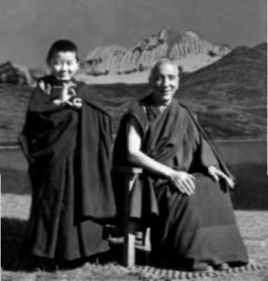
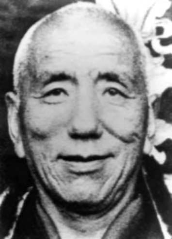
Jamyang Khyentse Chokyi Lodro (1896-1959) was the most outstanding Tibetan master of the last century. Authority on all traditions and holder of all lineages, he was the heart of the
'non-partisan' movement in Tibet.
Jamyang Khyentse Chokyi Lodro and Sogyal Rjnpoche.
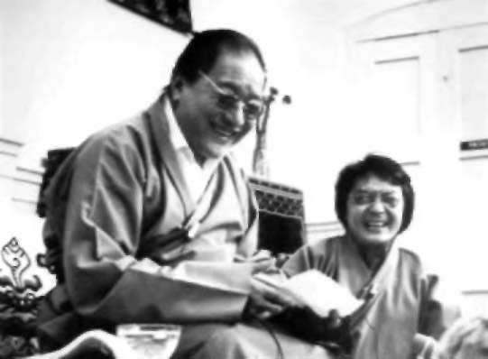
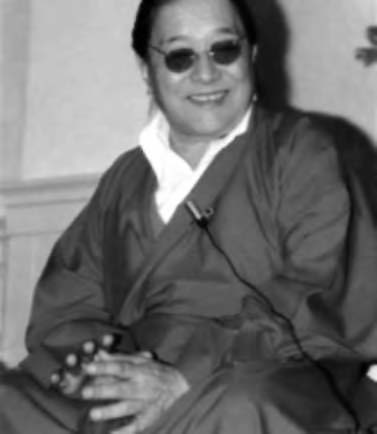
Dudjom Rinpoche (1904-1987), one of Tibet's foremost yogins, scholars, and meditation masters. Considered to be the living representative of Padmasambhava, he was a prolific author and revealer of the 'treasures' concealed by Padmasambhava.
Photo; Pen Eagleton,
Dudjom Rinpoche teaching and Sogyal Rinpoche translating.
London, 1979. Photo: Giles Oliver
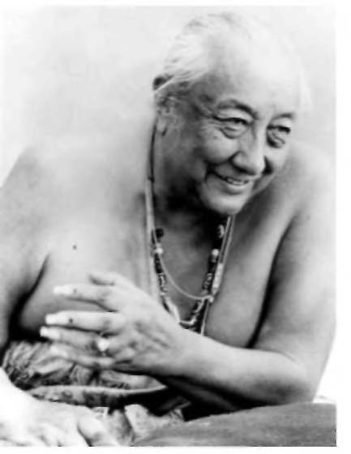
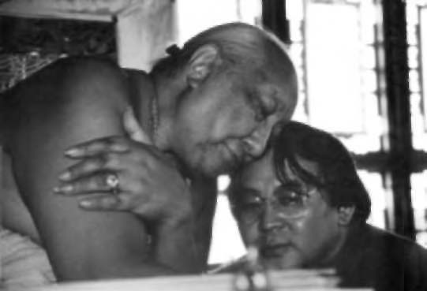
Dilgo Khyentse Rinpoche (1910-1991) was acknowledged as a peerless master of the Dzogchen teachings and discoverer of the spiritual treasures of Padmasambhava. He was the greatest disciple of Jamyang Khyentse Chokyi Lodro and master of many important lamas, including His Holiness the Dalai Lama.
Photo; Werner Nowotny,
Dilgo Khyentse Rinpoche and Sogyal Rinpoche.
Photo: Haeko Rah,
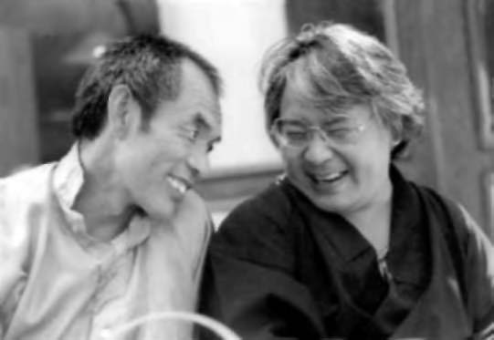
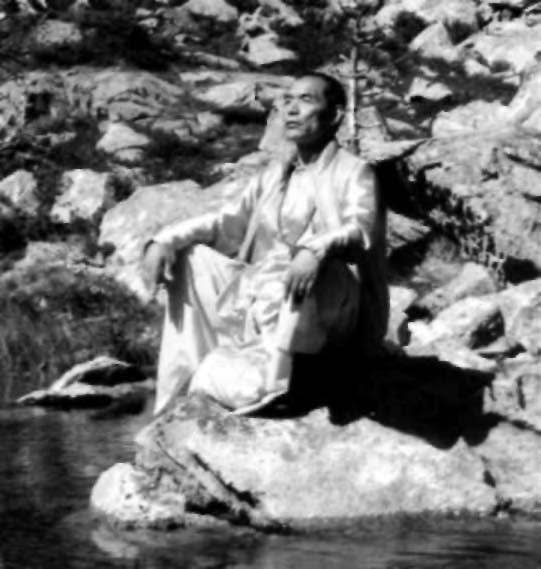
Nyoshul Khen Rjnpoche (1932-1999) was such a consummate master of Dzogchen that his disciples regarded him as the great master Longchenpa in the flesh. He was the teacher of many of the younger generation of lamas as well as a number of Western Buddhist teachers. Photo; Peter Fry,
Nyoshul Khenpo and Sogyal Rinpoche at the Rigpa retreat in Wales in 1986. Photo: Ruth Seehausen,
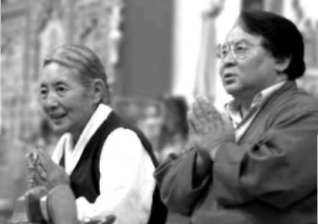
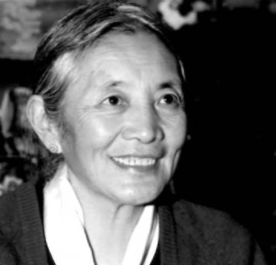
Khandro Tsering Chodron was the spiritual wife of Jamyang Khyentse Chokyi Lodro and is regarded as the foremost woman master in Tibetan Buddhism. Photo: Graham Price, Khandro Tsering Chodron and Sogyal Rinpoche at the Rigpa center in London, 1996. Photo: Graham Price,
APPENDIX TWO
Questions About Death
THE SKILL OF MEDICAL SCIENCE and advances in medical technology have been responsible for saving countless lives and alleviating untold suffering. Yet at the same time they pose many ethical and moral dilemmas for the dying, their families, and their doctors, which are complex and sometimes anguishingly difficult to resolve. Should we, for example, allow our dying relative or friend to be connected to a life-support system, or removed from one? To avoid prolonging the agony of a dying person, should doctors have the power to terminate a life? And should those who feel they are condemned to a long and painful death be encouraged, or even assisted, in killing themselves? People often ask me questions such as these about death and dying, and I would like to review some of them here.
STAYING ALIVE
Even forty years ago most people died at home, but now the majority of us die in hospitals and nursing homes. The prospect of being kept alive by a machine is a real and frightening one. People are asking themselves more and more what they can do to ensure a humane and dignified death, without their lives being unnecessarily prolonged. This has become a very complicated issue. How do we decide whether to begin life-support for a person, for instance, after a serious accident? And what if the person is comatose, cannot speak, or has been rendered mentally incapable because of a degenerative illness? What if it is an infant who is severely deformed and brain-damaged?
There are no easy answers to questions such as these, but there are some basic principles that might guide us. According to the teaching of Buddha, all life is sacred; all beings have buddha nature, and life offers them, as we have seen, the possibility of enlightenment. To avoid destroying life is taken as one of the first principles of human conduct. Yet Buddha also advised very strongly against dogmatism, and I believe we cannot take a fixed view, or an "official" position, or 378
QUESTIONS ABOUT DEATH 3 7 9
make rules about issues such as these. We can only act with whatever wisdom we have, according to each situation. And, as always, everything depends on our motivation and on the compassion behind it.
Is there any point in keeping people alive artificially when they otherwise would die? The Dalai Lama has indicated one essential factor—the state of mind of the dying person: "From the Buddhist point of view if a dying person has any chance of having positive, virtuous thoughts, it is important—and there is a purpose—for them to live for even just a few minutes longer." He highlights the stress on the family in such a situation: "If there is no such chance for positive thoughts, and in addition a lot of money is being spent by relatives simply in order to keep someone alive, then there seems to be no point. But each case must be dealt with individually; it is very difficult to generalize."1
Life-support measures or resuscitation can be a cause of disturbance, annoyance, and distraction at the critical moment of death.
We have seen from both the Buddhist teachings and the evidence of the near-death experience that even when people are in a coma they can have total awareness of everything that is going on around them.
What happens just before death, at death, and until the final separation of body and consciousness are moments of immense importance for anyone, and especially for a spiritual practitioner seeking to practice or rest in the nature of the mind.
In general there is a danger that life-sustaining treatment that merely prolongs the dying process may only kindle unnecessary grasping, anger, and frustration in a dying person, especially if this was not his or her original wish. Relatives who are faced with difficult decisions, and overwhelmed with the responsibility of letting their loved one die, should reflect that if there is no real hope of recovery, the quality of the final days or hours of their loved one's life may be more important than simply keeping the person alive.
Besides, as we never really know whether the consciousness is still in the body, we may even be condemning them to imprisonment in a useless body.
Dilgo Khyentse Rinpoche said:
To use life-support mechanisms when a person has no chance of recovery is pointless, It is far better to let them die naturally in a peaceful atmosphere and perform positive actions on their behalf. When the life-support machinery is in place, but there is no hope, it is not a crime to stop it, since there is no way in which the person can survive, and you are only holding onto their life artificially,
Attempts at resuscitation can also sometimes be needless and an unnecessary disturbance to a dying person. One doctor writes: The hospital erupts into a spasm of frenzied activity. Dozens of people rush to the bedside in a last-ditch effort to resuscitate the patient. The essentially dead patient is pumped full of drugs, stabbed with dozens of needles, and jolted with electric shocks. Our dying moments are closely documented by heart rate, levels of oxygen in the blood, brain wave readings, and so forth. Finally, when the last doctor has had enough, this tech-nohysteria comes to an end,2
You may not wish to have life-support mechanisms or be resuscitated, and you may want to be left undisturbed for some time after clinical death. How can you ensure that your wishes for the kind of peaceful environment recommended by the masters for dying will be respected?
Even if you state your wishes about wanting or refusing certain kinds of treatment in the hospital, your requests may not be respected. If your next of kin does not agree with your wishes, he or she may ask for particular procedures to be started even while you are still conscious and able to talk. Unfortunately, it is not uncommon for doctors to comply with family's wishes rather than those of the dying person. Of course the best way to have some control over your medical care when you are dying is to die at home.
In some parts of the world, documents known as Living Wills exist, through which you can state your desires for treatment in case the time comes when you can no longer make decisions for your own future. These are a sensible precaution, and help doctors if they are faced with a dilemma. However, they are not legally binding, and cannot anticipate the complexities of your illness. In the United States you can draw up what is called a "Durable Power of Attorney for Health Care" with a lawyer. This is the most effective way to state your choices and ensures, as far as possible, that they will be respected. In it you name an agent, a legal spokesperson who understands your attitudes and wishes, who can respond to the special circumstances of your illness, and who can make crucial decisions on your behalf.
My advice (as I indicated in Chapter 11, "Heart Advice on Helping the Dying") is to find out whether or not your doctor is comfortable honoring your wishes, especially if you want to have life-support measures withdrawn when you are dying, and you do not wish to be resuscitated if your heart stops. Make sure that your doctor informs the hospital staff and has your wishes written onto your chart. Discuss the issue of your dying with your relatives. Ask your family or friends to request the staff to disconnect any monitors and IV lines once the process of dying has begun, and to move you from an intensive care unit into a private room if feasible. Explore ways in which the atmosphere around you can be made as quiet, peaceful, and as free from panic as possible.
QUESTIONS ABOUT DEATH 381
ALLOWING DEATH TO HAPPEN
In 1986 the American Medical Association ruled it was ethical for doctors to remove life-support, including food and water, from terminally ill patients about to die and from those who could linger in a coma. Four years later a Gallup poll showed that 84 percent of Americans would prefer to have treatment withheld if they were on life-support and had no hope of recovering.3
The decision to limit or withhold life-sustaining treatments is often called "passive euthanasia." Death is allowed to happen naturally, by refraining from medical intervention or heroic measures that can only lengthen a person's life by days or hours, and where their condition is not amenable to treatment. It would include terminating aggressive treatments or therapies aimed at curing the dying person, refusing or discontinuing life-support machinery and intravenous feed-ing, and dispensing with cardiac resuscitation. This passive form of euthanasia also takes place when the family and doctor choose not to treat a secondary condition that will result in death. For example, a person dying in the final stages of bone cancer may develop pneumo-nia, which if not treated may lead to a death that is more peaceful, and less painful and prolonged.
What about people who are terminally ill and decide to take themselves off life-support? By ending their lives, are they committing a negative action? Kalu Rinpoche has answered this question very precisely:
The person who decides that they have had enough suffering and wish to be allowed to die is in a situation that we cannot call virtuous or non-virtuous. We certainly cannot blame someone for making that decision. It is not a karmically negative act. It is simply the wish to avoid suffering, which is the fundamental wish of all living beings. On the other hand, it is not a particularly virtuous act, either. Rather than being a wish to end one's life, it's a wish to end suffering. Therefore it is a karmically neutral act.
What if we are caring for a dying person who asks us to remove life-support? Kalu Rinpoche said:
We may not be able to save the patient's life. We may not be able to relieve the person's suffering. But we are trying our best, motivated in the purest way possible. Whatever we do, even if it is not ultimately successful, can never be thought of as karmically damaging or karmically negative..
When a healer is instructed by a patient to remove life-support systems, that puts the healer in a difficult position, because the instincts of the healer may be telling them, "If this person stayed on the life-support system they would remain alive. If I take them off, they will die," The karmic consequences depend upon the healer's intent because the healer will be depriving someone of the means to stay alive, regardless of the fact that it was that person that told us to do it. If the basic motivation of the healer has always been to help and benefit that person and relieve their suffering, then from that state of mind it seems as though nothing karmically negative can develop,4
CHOOSING TO DIE
The same 1990 Gallup poll cited earlier showed that 66 percent of people in the United States believed that a person in great pain, with
"no hope of improvement," had a moral right to take his or her own life. In a country like Holland, ten thousand people are said to choose euthanasia each year. The doctors who help them to die must prove that the patient consents, that he or she discussed the alternatives with them fully, and that the doctor consulted a colleague for a second opinion. In the United States matters have come to such a head that a book clearly describing methods of suicide for people faced with a terminal illness has become a runaway best-seller, and movements have been begun to legalize "active euthanasia" or "aid in dying."
But what would happen if euthanasia were legal? Many people are afraid that patients labeled as terminal, especially those in great pain, might choose to die even though their pain might be manage-able, and their lives might be longer. Others fear that the elderly might simply feel it is their duty to die, or choose suicide simply to spare their families' lives and money.
Many of those who work with the dying feel that higher stan-dards of terminal care are the answer to requests for euthanasia.
When she was asked about the pending legislation on euthanasia, Elisabeth Kubler-Ross replied: "I find it sad that we have to have laws about matters like this. I think that we should use our human judgment, and come to grips with our own fear of death. Then we could respect patients' needs and listen to them, and would not have a problem such as this."5
People are afraid that dying will be unbearable, that they will be overtaken by immobilizing, even dementing illness, and intolerable and meaningless pain. The Buddhist teachings offer us a different attitude toward suffering, one that gives it a purpose. The Dalai Lama points out that
Your suffering is due to your own karma, and you have to bear the fruit of that karma anyway in this life or another, unless you can find some way of purifying it, In that case, it is considered to be better to experience the karma in this life of a human where you have more abilities to bear it in a better way, than, for example, an animal who is helpless and can suffer even more because of that,
QUESTIONS ABOUT DEATH 3 8 3
According to the Buddhist teachings we should do everything we can to help the dying cope with their deterioration, pain, and fear, and offer them the loving support that will give the end of their lives meaning. Dame Cicely Saunders, founder of St. Christopher's Hospice in London, said: "If one of our patients requests euthanasia, it means we are not doing our job." She argues against the legalization of euthanasia, and says:
We are not so poor a society that we cannot afford time and trouble and money to help people live until they die. We owe it to all those for whom we can kill the pain which traps them in fear and bitterness. To do this we do not have to kill them. To make voluntary [active] euthanasia lawful would be an irresponsible act, hindering help, pressuring the vulnerable, abrogating our true respect and responsibility to the frail and the old, the disabled and dying
SOME OTHER QUESTIONS
What happens to the consciousness of a baby that is aborted, or dies very young? What can the parents do to help the baby?
Dilgo Khyentse Rinpoche explained:
The consciousness of those who die before birth, at birth, or in infancy will travel once again through the bardo states, and take on another existence.
The same meritorious practices and actions can be done for them as are usually performed for the dead: the purification practice and mantra recitation of Vajrasattva, offering of lights, purification of the ashes, and so on.
In the case of an abortion, in addition to these usual practices, if the parents feel remorse they can help by acknowledging it, asking for forgiveness, and performing ardently the purification practice of Vajrasattva. They can also offer lights, and save lives, or help others, or sponsor some humanitarian or spiritual project, dedicating it to the well-being and future enlightenment of the baby's consciousness.
What happens to the consciousness of a person who commits suicide?
Dilgo Khyentse Rinpoche said:
When a person commits suicide, the consciousness has no choice but to follow its negative karma, and it may well happen that a harmful spirit will seize and possess its life force, In the case of suicide, a powerful master must perform special kinds of practices, such as fire ceremonies and other rituals, in order to free the dead person's consciousness.
Should we donate our organs when we die? What if they have to be removed while the blood is still circulating or before the process of dying is complete? Doesn't this disturb or harm the consciousness at the moment before death?
Masters whom I have asked this question agree that organ donation is an extremely positive action, since it stems from a genuinely compassionate wish to benefit others. So, as long as it is truly the wish of the dying person, it will not harm in any way the consciousness that is leaving the body. On the contrary, this final act of generosity accumulates good karma. Another master said that any suffering and pain that a person goes through in the process of giving his or her organs, and every moment of distraction, turns into a good karma.
Dilgo Khyentse Rinpoche explained: "If the person is definitely going to die within a few moments, and has expressed the wish to give his organs, and his mind is filled with compassion, it is all right for them to be removed even before the heart stops bearing."
What about cryonks, where a person's body, or just the head, is frozen to await the time when medical science has advanced to the point where they can be resuscitated?
Dilgo Khyentse Rinpoche called this utterly meaningless. One's consciousness cannot enter one's body again after one is actually dead. The belief that one's corpse is being kept for future revival can obviously trap the person's consciousness in a tragically increased attachment to the body, and so aggravate its suffering immensely and block the process of rebirth. One master compares cryonics to going directly to a cold hell, without even passing through the bardo state.
What can we do for an aging parent, a father, for example, who has become senile or demented?
At that point it may be of no use to try to explain the teachings, but practicing quietly or saying mantras or the names of the buddhas in his presence will definitely help. Kalu Rinpoche explains: You will be planting seeds. Your own aspirations and altruistic concern for him in this situation are very important, In offering this service to your father in his unhappy circumstances, you must go about it with the best of intentions, out of a true concern for his welfare and happiness, That is a very important factor in your relationship to him in these times. The karmic connection between parents and children is very strong. Much benefit can be worked on subtle levels because of that bond, if our approach to our parents is marked by compassion and concern and our involvement in spiritual practice is not only for our sake, but for the benefit of other beings as well, particularly, in this case, our parents?
APPENDIX THREE
Two Stories
MY STUDENTS AND FRIENDS in the West have told me many inspiring accounts of people they knew who were helped, as they died, by the teachings of Buddha. Let me tell you here the stories of two of my students, and of the way they have faced death.
DOROTHY
Dorothy was a student of mine who died from cancer at St.
Christopher's Hospice in London in England. She had been a talented artist and embroiderer, art historian, and tour guide, as well as a color therapist and healer. Her father was a well-known healer, and she had a great respect for all religions and spiritual traditions. It was late in her life when she discovered Buddhism, and became, as she said
"hooked"; she said she found its teachings gave her the most compelling and complete view of the nature of reality. Let some of her spiritual friends, who cared for her while she died, tell you in their own words how Dorothy let the teachings help her when she came to die:
Dorothy's death was an inspiration to us all. She died with such grace and dignity, and everyone who came in contact with her felt her strength—doctors, nurses, auxiliary helpers, other patients, and not least her spiritual friends, who were fortunate enough to be around her during the last weeks of her life.
When we visited Dorothy at home before she went into the hospice, it was clear that the cancer was in a very aggressive phase, and her organs were beginning to fail. She had been on morphine for over a year and now she could hardly eat or drink; yet she never complained, and you would never have known that she was in fact in considerable pain. She had grown terribly thin, and there were moments when she was obviously exhausted. But whenever people came to visit her, she would greet them and entertain them, radiating a remarkable energy and joy unfailingly serene and considerate. One of her favorite things was to lie on her couch, and listen to tapes of 385
Sogyal Rinpoche's teachings, and she was delighted when he sent her some tapes from Paris, which he said would have a special meaning for her.
Dorothy prepared and planned for her death right down to the last detail. She wanted there to be no unfinished business for others to sort out, and spent months working on all the practical arrangements. She didn't seem to have any fear of dying, but wanted to feel that there was nothing left undone, and that she could then approach death without distraction. She derived a lot of comfort from the knowledge that she had done no real harm to others in her life, and that she had received and followed the teachings; as she said "I've done my homework."
When the time came for Dorothy to go into the hospice, and leave her flat for the last time—a flat once full of beautiful treasures collected over the years—she left with just a small holdall and without even a backward glance. She had already given most of her personal possessions away, but she took a small picture of Rinpoche that she always kept with her, and his small book on meditation. She had essentialized her life into that one small bag: "traveling light," she called it. She was very matter-of-fact about leaving, almost as though she were only going as far as the shops; she simply said "Bye bye, flat," waved her hand and walked out of the door.
Her room in the hospice became a very special place. There was always a candle lit on her bedside table in front of Rinpoche's picture, and once, when someone asked if she would like to talk to him, she smiled, looked at the photograph, and said: "No, there's no need, he's always here!" She often referred to Rinpoche's advice on creating the
"right environment," and had a beautiful painting of a rainbow put on the wall directly in front of her; there were flowers everywhere, brought by her visitors.
Dorothy remained in command of the situation, right up to the end, and her trust in the teachings seemed never to waver, even for a second. It felt as though she was helping us, rather than the other way round! She was consistently cheerful, confident, and humorous, and had a dignity about her, which we saw sprung from her courage and self-reliance. The joy with which she always welcomed us secretly helped us to understand that death is by no means somber or terrifying. This was her gift to us, and it made us feel honored and privileged to be with her.
We had almost come to depend on Dorothy's strength, so it was humbling for us when we realized that she needed our strength and support. She was going through some final details about her funeral, when suddenly we saw that, after having been so concerned about others, what she needed now was to let go of all these details and turn her attention toward herself. And she needed us to give her our permission to do so.
It was a difficult, painful death and Dorothy was like a warrior.
TWO STORIES 387
She tried to do as much as possible for herself, so as not to make work for the nurses, until the moment when her body would no longer support her. On one occasion, when she was still able to get out of bed, a nurse asked her very discreetly if she would like to sit on the commode. Dorothy struggled up, then laughed and said, "Just look at this body!" as she showed us her body, reduced almost to a skeleton. Yet because her body was falling apart, her spirit seemed to radiate and soar. It was as though she were acknowledging that her body had done its job: It was no longer really "her" but something she had inhabited and was now ready to let go of.
For all the light and joy that surrounded Dorothy, it was clear that dying was by no means easy; in fact it was very hard work.
There were bleak and harrowing moments, but she went through them with tremendous grace and fortitude. After one particularly painful night when she had fallen over, she became afraid that she might die at any moment, all alone, and so she asked for one of us to stay with her all the time. It was then that we began the 24-hour rotation.
Dorothy practiced every day, and the purification practice of Vajrasattva was her favorite practice. Rinpoche recommended teachings on death for her to read, which included an essential practice of phowa. Sometimes we would sit together reading passages out loud to her; sometimes we would chant Padmasambhava's mantra; sometimes we would simply rest in silence for a while. So we developed a gentle, relaxed rhythm of practice and rest. There were times when she would doze, and wake up to say: "Oh, isn't this lovely!" When she appeared more energetic and alive, and if she felt like it, we would read passages from the bardo teachings, so that she could identify the stages she would go through. We were all astonished at how bright and alert she was, but she wanted to keep her practice very simple—just the essence. When we arrived to change "shifts" we would always be struck by the peaceful atmosphere in the room, Dorothy lying there, her eyes wide open, gazing into space, even while she was sleeping, and her attendant sitting or quietly reciting mantras.
Rinpoche would often telephone to find out h o w she was getting on, and they talked freely about how near she was to death. Dorothy would speak in a down-to-earth way, and say things like, "Just a few more days to go, Rinpoche." One day the nurses wheeled in the telephone trolley saying, "Telephone call from Amsterdam." Dorothy brightened up immediately, and glowed with pleasure as she took the call from Rinpoche. After she hung up she beamed at us and said he had told her that she should no longer concentrate on reading texts, and that now was the time simply to "rest in the nature of mind; rest in the luminosity." When she was very close to death, and Rinpoche called her for the last time, she told us he had said, "Don't forget us; look us up some time!"
Once when the doctor came round to check on how she was and adjust her medication, Dorothy explained, in a disarmingly simple and straightforward way, "You see, I am a student of Buddhism, and we believe that when you die you see lots of light. I think I'm beginning to see a few flashes of light, but I don't think I've really quite seen it yet." The doctors were astounded by her clarity and her liveli-ness, particularly, they told us, in her advanced stage of illness, when they would normally have expected her to have been unconscious.
As death came closer, the distinction between day and night seemed to blur, and Dorothy went deeper and deeper into herself.
The color in her face changed and her moments of consciousness became fewer. We thought we could detect the signs of the elements dissolving. Dorothy was ready to die, but her body was not ready to let go, because her heart was strong. So each night turned into an ordeal for her, and she would be surprised in the morning that she had made it through to another day. She never complained, but we could see how she was suffering; we did everything we could to make her more comfortable, and when she could no longer take fluids, we would moisten her lips. Right up until the last thirty-six hours, she politely refused any drugs that would interfere with her awareness.
Not long before Dorothy died, the nurses moved her. She lay curled up in a fetal position, and even though her body had now wasted away to almost nothing, and she could neither move nor speak, her eyes were still open and alive, looking directly ahead, through the window in front of her, out into the sky. In the moment just before she died, she moved, almost imperceptibly, looked Debbie straight in the eye, and communicated something strongly; it was a look of recognition, as if to say, "This is it," with a hint of a smile.
Then she gazed back out at the sky, breathed once or twice, and passed away. Debbie gently let go of Dorothy's hand, so that she could continue, undisturbed, through the inner dissolution.
The staff at the hospice said that they had never seen anyone so well prepared for death as Dorothy, and her presence and inspiration were still remembered by many people at the hospice even a year after her death.
RICK
Rick lived in Oregon and had AIDS. He had worked as a computer operator, and was forty-five when, a few years ago, he came to the annual summer retreat I lead in the United States, and spoke to us about what death, and life, and his illness meant to him. I was amazed by how Rick, who had only studied the Buddhist teachings with me for two years, had taken them to heart. In this brief period he had, in his own way, captured the essence of the teachings: devotion, compassion, and the View of the nature of mind, and made TWO STORIES 389
them a part of his life. Rick sat in his chair and faced us all and told us how he felt about dying. I hope that these excerpts will give you some flavor of this moving occasion:
When I thought I was dying, two years ago, I did what was natural: I cried out, and I was answered. And it took me through several weeks of horrible fevers, where I thought I was going to go in the middle of the night. This devotion, this crying out. When this is all you can do, we have that promise from Padmasambhava that he is there. And he doesn't lie: he has proved himself to me many times.
If it were not for Padmasambhava, whom Rinpoche teaches us is the nature of our own mind, our own buddha nature, if it were not for that glorious shining presence, I couldn't go through what I'm going through. I just know I couldn't.
The first thing I realized was that you must take personal responsibility for yourself. The reason I am dying is that I have AIDS. That is my responsibility; no one else is to blame. In fact there is no one to blame, not even myself. But I take responsibility for that.
I made a vow to myself and to whatever gods there may be, before I came into Buddhism, that I just wanted to be happy. When
. . . I made that decision, I stuck to it. And this is very important in doing any kind of training of the mind. You must make the decision that you really want to change. If you don't want to change, no one is going to do the work for you.
Our p a r t . . .is to work with the daily aspects of our situation. First is to be grateful that you are in this body, and on this planet. That was the beginning for me—realizing gratitude for the earth, for living beings. Now that I feel things slowly slipping out, I am becoming so much more grateful for everyone and everything. So my practice now centers on this gratitude, simply a constant offering of praise to life, to Padmasambhava, who is living all of these multitudinous forms.
Don't make the mistake I did for so many years, that "practice"
means sitting straight and saying mantras, thinking, "I'll be glad when this is over!" Practice is much bigger than that. Practice is every person you meet; practice is every unkind word you hear or that may even be directed at you.
When you stand up from your practice seat, that's when practice really begins. We have to be very artful and creative in how we apply the practice to life. There is always something in our environment we can connect with, to do the practice. So if I'm too dizzy to visualize Vajrasattva above my head, I stand up, and I go and wash my morning dishes, and the plate I'm holding in my hand is the world and all its suffering beings. Then I say the mantra . . . OM
VAJRA SATTVA HUM . . . and I'm washing away the suffering of beings. When I take a shower, it's not a shower; that's Vajrasattva above my head. When I go out in the sunshine, it is the light, like a hundred thousand suns, shining from Vajrasattva's body and entering me, and I just take it in. When I see a beautiful person walking down the street, I might in the beginning think, "What a nice-looking person," but the next instant I am offering that up to Padmasambhava with my full heart, and letting it go. You have to take real life situations and make them your practice. Otherwise you will have only an empty belief that gives you no solace, no strength, when hard times start. It's just a belief: "Oh, some day, I'll go to heaven. Someday I'll be a Buddha." Well, some day you won't be a Buddha. You are a Buddha, now. And when you practice, you are practicing at being who you are
It's very important to take situations that are occurring in your life and use them. As Rinpoche keeps saying, if you have practiced calling out and asking for help, then in the bardos it will be natural to do the s a m e . I made a mantra out of this line by Dudjom Rinpoche:
"Lama of unrepayable kindness, I only remember you." Some days, it is all I can manage to think; it is the only practice I can get out. But it works great.
So . . . happiness, self-responsibility, gratitude . . . don't confuse a dead, ritualistic practice for a living, ongoing, changing, fluid, opening, glorious practice. Because, and it's my experience right now—and I know it sounds like words perhaps, but I know in my heart it's not—I see Padmasambhava everywhere. That's just my practice.
Every person, especially the difficult ones, who make life difficult for others, encountering them is the blessing of the master. To me this illness is the blessing of the master. It is grace. So much grace I could chew on it.
But this has happened because I have trained my m i n d . When I started, I used to judge things constantly in my mind. I would judge this person; I would judge that one. I would judge the way he looked; I would judge the way she sat; I would judge, "I don't like today, it's too rainy, too gray. Oh, poor me . . . Oh love me . . . Oh help!" So I started with that. It was just a constant commentary in my mind. But I made a start. I would write myself little notes and stick them on my refrigerator. "Don't judge!"
When you live in your mind—that is choosing between this and that, "This is good . . . this is bad, I don't want it," between hope and fear, between hate and love, between joy and sorrow, when you are actually grasping for one of those extremes—the essential peace of your mind is disturbed. A Zen patriarch says: "The Great Way is not difficult for those who have no preferences." Because your buddha nature is there. Happiness is everywhere.
So I began to work with my conceptual mind. At first it seemed like an impossible thing to do. But the more I practiced at i t . . . I found out: If you leave the risings in their own place, they are perfectly fine, where they are. Just be with them, and be happy, because you know you have the buddha nature.
TWO STORIES 391
You don't have to feel like you have the buddha nature. That's not the point. The point is trust, which is faith. The point is devotion, which is surrender. That, for me, is the essence. If you can trust what the master is saying, and study and try to bring the teaching back to yourself in difficult times, and train your mind not to fall into its habitual patterns, if you can just be with what is happening, with bare attention, after a while you notice that nothing stays around very long. Not even negative thoughts. Especially not our bodies.
Everything changes. If you leave it in its place, it will liberate itself.
In a situation like mine, when fear becomes so obvious to you, and so predominant, and you feel like you are being swallowed by the fear, you must take your mind in hand. I have realized that fear is not going to kill me. This is just something that is passing through my mind. This is a thought and I know that thoughts will liberate themselves if I just keep my hands off. I also realize that's what happens in the bardos, when and if you see a vision coming at you that might be frightening; it's not coming anywhere other than from you!
All those energies we have kept damped down into our bodies are being released.
I also discovered, early on, when I was training my mind, there is a certain point, a certain line you must draw, and beyond that point you cannot let your mind go. If you do, you risk mental problems, you risk moroseness, you risk being a real downer for everybody around you: that would be the least. But you could flip out. People do flip out, get unbalanced by believing what their minds are telling them about reality. We all do it, but there is a certain line beyond which you cannot g o. I used to have panic attacks. I thought there was a big black hole in the ground in front of me. Since I have allowed myself the privilege, and the grace of being happy, all the time, I don't see black holes any more.
Some of you have been dearer to me than my family. Because you allow Padmasambhava to come to me in just another way, through your care and your concern and your love. You don't seem to care that I have AIDS. No one has ever asked me: "Well, how did you get it?" No one has ever intimated that this might be a curse on me; except one old friend of mine who called me a week or so ago and said, "Aren't you afraid that this is God's curse on you?" After I stopped laughing, I said, "You believe that God has cursed the earth and the human body is impure. I, on the other hand, believe that blessing is the original starting point, not a curse." From beginningless time, everything has already been accomplished, pure and perfect.
So what I do now is just rest in the radiance. It's everywhere. You can't get away from it. It is so intoxicating that sometimes I feel like I am just floating in the radiance. I am letting Padmasambhava, as he flies through the sky of the mind, just let me tag along.
Now if I were sitting out there listening to this, I would say,
"Okay then, w h y aren't you healed?" People have asked me that. It's not that I haven't tried: I bought a whole suitcase full of pills. But I stopped that question quite a while ago. I guess the reason I did was because it seemed it would be manipulating and interfering with the process that has started. This process is very cleansing for me. I know there is a lot of karma being bumed up. It's cleansing perhaps for my mother, because I offer this for her. She suffers quite a bit.
Then there are spiritual friends in this group whom I love like brothers and sisters; they suffer too. I have made this covenant with Padmasambhava: If I have to stay around and suffer so that some of it could help cleanse and purify you as well as me, what a blessing that would be! This is my prayer. And I'm not a person who likes to suffer, I can guarantee you that! But I feel that grace, that blessing, pushing me gently into that suffering.
And at this point, from studying what I have studied of Rinpoche's teachings on the bardos, death is not an enemy. Just like our thoughts are not to be seen as enemies And life is not an enemy. Life is something glorious, because in this life we can awaken to who we truly are.
So I beg you—from the bottom of my heart—not to waste the opportunity you have, while you are still relatively healthy, to work with what Rinpoche is offering y o u . . . He knows how to get to the point in speaking and teaching about what Dzogchen is, and he knows how to take you there in the heart. That is so important: and especially when you are getting ready to die.
So I'm here to say goodbye. At least for this time around . . . I want to say goodbye to all those of you who have become my brothers and sisters, those of you whom I know but have not had the privilege of getting to know better, those of you I have not even m e t . . . I have a feeling that within the next six months I may die. It could be within the next three months. So I hold you all in my heart, and I see you all bright and shining. There is no darkness. It is just light from Padmasambhava's heart, pervading all of us. Thanks to the master's blessing.
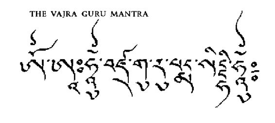
APPENDIX FOUR
Two Mantras
The two most famous mantras in Tibet are the mantra of Padmasambhava, called the Vajra Guru Mantra, OM AH HUM
VAJRA GURU PADMA SIDDHI HUM, and the mantra of Avalokiteshvara, the Buddha of Compassion, OM MANI PADME HUM.
Like most mantras they are in Sanskrit, the ancient sacred language of India.
The Vajra Guru mantra, OM AH HUM VAJRA GURU PADMA SIDDHI HUM, is pronounced by Tibetans: Om Ah Hung Benza Guru Pema Siddhi Hung. This exploration of its meaning is based on explanations by Dudjom Rinpoche and Dilgo Khyentse Rinpoche.
OM AH HUM
The syllables OM AH HUM have outer, inner, and "secret" meanings. At each of these levels, however, OM stands for the body, AH
for the speech, and HUM for the mind. They represent the transformative blessings of the body, speech, and mind of all the buddhas.
Externally OM purifies all the negative actions committed through your body, AH through your speech, and HUM through your mind.1
By purifying your body, speech, and mind, OM AH HUM grants the blessing of the body, speech, and mind of the buddhas.
OM is also the essence of form, AH the essence of sound, and HUM the essence of mind. So by reciting this mantra, you are also purifying the environment, as well as yourself and all other beings within it. OM purifies all perceptions, AH all sounds, and HUM the mind, its thoughts and emotions.
Internally OM purifies the subtle channels, AH the wind, inner air or flow of energy, and HUM the creative essence.2
On a deeper level, OM AH HUM represent the three kayas of the Lotus family of buddhas: OM is the Dharmakaya: the Buddha Amitabha, Buddha of Limitless Light; AH is the Sambhogakaya: Avalokiteshvara, the Buddha of Compassion; and HUM is the Nirmanakaya: Padmasambhava. This signifies, in the case of this mantra, that all three kayas are embodied in the person of Padmasambhava.
At the innermost level, OM AH HUM bring the realization of the three aspects of the nature of mind: OM brings the realization of its unceasing Energy and Compassion, AH brings the realization of its radiant Nature, and HUM brings the realization of its skylike Essence.
VAJRA GURU PADMA
VAJRA is compared to the diamond, the strongest and most precious of stones. Just as a diamond can cut through anything but is itself completely indestructible, so the unchanging, nondual wisdom of the buddhas can never be harmed or destroyed by ignorance, and can cut through all delusion and obscurations. The qualities and activities of the body, speech, and wisdom mind of the buddhas are able to benefit beings with the piercing, unhindered power of the diamond. And like a diamond, the Vajra is free of defects; its brilliant strength comes from the realization of the Dharmakaya nature of reality, the nature of the Buddha Amitabha.
GURU means "weighty"; someone replete with every wonderful quality, who embodies wisdom, knowledge, compassion, and skillful means. Just as gold is the weightiest and most precious of metals, so the inconceivable, flawless qualities of the Guru—the master—make him unsurpassable, and above all things in excellence. GURU corresponds to the Sambhogakaya, and to Avalokiteshvara, the Buddha of Compassion. Also, since Padmasambhava teaches the path of Tantra, which is symbolized by the Vajra, and through the practice of Tantra he attained supreme realization, so he is known as "the VAJRA GURU."
PADMA means lotus, and signifies the Lotus family of the buddhas, and specifically their aspect of enlightened speech. The Lotus family is the buddha family to which human beings belong. As Padmasambhava is the direct emanation, the Nirmanakaya, of Buddha Amitabha, who is the primordial buddha of the Lotus family, he is known as "PADMA." His name Padmasambhava, the "Lotus-born,"
in fact refers to the story of his birth on a blossoming lotus flower.
TWO MANTRAS 395
When the syllables VAJRA GURU PADMA are taken together, they also signify the essence and the blessing of the View, Meditation, and Action. VAJRA means the unchanging, diamantine, indestructible Essence of the truth, which we pray to realize in our View.
GURU represents the luminosity Nature and noble qualities of enlightenment, which we pray to perfect in our Meditation. PADMA stands for Compassion, which we pray to accomplish in our Action.
Through reciting the mantra, then, we receive the blessing of the wisdom mind, the noble qualities and the compassion of Padmasambhava and all the buddhas.
SIDDHI HUM
SIDDHI means "real accomplishment," "attainment," "blessing,"
and "realization." There are two kinds of siddhis: ordinary and supreme. Through receiving the blessing of ordinary siddhis, all obstacles in our lives, such as ill-health, are removed, all our good aspirations are fulfilled, benefits like wealth and prosperity and long life accrue to us, and all of life's various circumstances become auspicious and conducive to spiritual practice, and the realization of enlightenment.
The blessing of the supreme siddhi brings about enlightenment itself, the state of complete realization of Padmasambhava, that benefits both ourselves and all other sentient beings. So by remembering and praying to the body, speech, mind, qualities, and activity of Padmasambhava, we will come to attain both ordinary and supreme siddhis.
SIDDHI HUM is said to draw in all the siddhis like a magnet that attracts iron filings.
HUM represents the wisdom mind of the buddhas, and is the sacred catalyst of the mantra. It is like proclaiming its power and truth: "So be it!"
The essential meaning of the mantra is: "I invoke you, the Vaj'ra Guru, Padmasambhava, by your blessing may you grant us ordinary and supreme siddhis,"
Dilgo Khyentse Rinpoche explains:
It is said that the twelve syllables OM AH HUM VAJRA GURU
PADMA SIDDHI HUM carry the entire blessing of the twelve types of teaching taught by Buddha, which are the essence of his eighty-four thousand Dharmas, Therefore to recite the Vajra Guru mantra once is equivalent to the blessing of reciting, or practicing the whole teaching of the Buddha. These twelve branches of the teachings are the antidotes to free us from the "Twelve Links of Interdependent Origination," which keep us bound to samsara: ignorance, karmic formations, discursive consciousness, name and form, senses, contact, sensation, craving, grasping, existence, birth, old age and death. These twelve links are the mechanism of
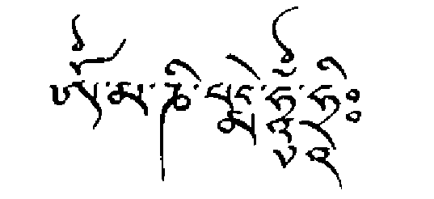
samsara, by which samsara is kept alive. Through reciting the twelve syllables of the Vajra Guru mantra, these twelve links are purified, and you are able to remove and purify completely the layer of karmic emotional defilements, and so be liberated from samsara.
Although we are not able to see Padmasambhava in person, his wisdom mind has manifested in the form of mantra; these twelve syllables are actually the emanation of his wisdom mind, and they are endowed with his entire blessing. The Vajra Guru mantra is Padmasambhava in the form of sound. So when you invoke him with the recitation of the twelve syllables, the blessing and merit you obtain is tremendous. In these difficult times, just as there is no buddha or refuge we can call upon who is more powerful than Padmasambhava, so there is no mantra that is more fitting than the Vajra Guru mantra,
THE MANTRA OF COMPASSION
The Mantra of Compassion, OM MANI PADME HUM, is pronounced by Tibetans: Om Mani Peme Hung. It embodies the compassion and blessing of all the buddhas and bodhisattvas, and invokes especially the blessing of Avalokiteshvara, the Buddha of Compassion. Avalokiteshvara is a manifestation of the Buddha in the Sambhogakaya, and his mantra is considered the essence of the Buddha's compassion for all beings. Just as Padmasambhava is the most important master for the Tibetan people, Avalokiteshvara is their most important buddha, and the karmic deity of Tibet. There is a famous saying that the Buddha of Compassion became so embedded in the Tibetan consciousness that any child who could say the word
"mother" could also recite the mantra OM MANI PADME HUM.
Countless ages ago, it is said, a thousand princes vowed to become buddhas. One resolved to become the Buddha we know as Gautama Siddhartha; Avalokiteshvara, however, vowed not to attain enlightenment until all the other thousand princes had themselves become buddhas. In his infinite compassion, he vowed too to liberate all sentient beings from the sufferings of the different realms of samsara. Before the buddhas of the ten directions, he prayed: "May I help all beings, and if ever I tire in this great work, may my body be shattered into a thousand pieces." First, it is said, he descended into the TWO MANTRAS 397
hell realms, ascending gradually through the world of hungry ghosts, up to the realm of the gods. From there he happened to look down and saw, aghast, that though he had saved innumerable beings from hell, countless more were pouring in. This plunged him into the pro-foundest grief; for a moment he almost lost faith in that noble vow he had taken, and his body exploded into a thousand pieces. In his desperation, he called out to all the buddhas for help, who came to his aid from all directions of the universe, as one text said, like a soft blizzard of snowflakes. With their great power the buddhas made him whole again, and from then on Avalokiteshvara had eleven heads, and a thousand arms, and on each palm of each hand was an eye, signifying that union of wisdom and skillful means that is the mark of true compassion. In this form he was even more resplendent and empowered than before to help all beings, and his compassion grew even more intense as again and again he repeated this vow before the buddhas: "May I not attain final buddhahood before all sentient beings attain enlightenment."
It is said that in his sorrow at the pain of samsara, two tears fell from his eyes: through the blessings of the buddhas, they were transformed into the two Taras. One is Tara in her green form, who is the active force of compassion, and the other is Tara in her white form, who is compassion's motherly aspect. The name Tara means "she who liberates": she who ferries us across the ocean of samsara.
It is written in the Mahayana Sutras that Avalokiteshvara gave his mantra to the Buddha himself, and Buddha in turn granted him the special and noble task of helping all beings in the universe toward buddhahood. At this moment all the gods rained flowers on them, the earth shook, and the air rang with the sound OM MANI PAD ME
HUM HRIH.
In the words of the poem:
Avalokiteshvara is like the moon
Whose cool light puts out the burning fires of samsara In its rays the night-flowering lotus of compassion Opens wide its petals.
The teachings explain that each of the six syllables of the mantra—OM MA NI PAD ME HUM—has a specific and potent effect in bringing about transformation at different levels of our being.
The six syllables purify completely the six poisonous negative emotions, which are the manifestation of ignorance, and which cause us to act negatively with our body, speech, and mind, so creating samsara and our suffering in it. Pride, jealousy desire, ignorance, greed, and anger are transformed, through the mantra, into their true nature, the wisdoms of the six buddha families that become manifest in the enlightened mind.3
So when we recite OM MANI PADME HUM, the six negative emotions, which are the cause of the six realms of samsara, are purified. This is how reciting the six syllables prevents rebirth in each of the six realms, and also dispels the suffering inherent in each realm.
At the same time reciting OM MANI PADME HUM completely purifies the aggregates of ego, the skandhas, and perfects the six kinds of transcendental action of the heart of the enlightened mind, the paramitas of: generosity, harmonious conduct, endurance, enthusiasm, concentration, and insight. It is also said that OM MANI PADME
HUM grants strong protection from all kinds of negative influences, and various different forms of illness.
Often HRIH, the "seed-syllable" of Avalokiteshvara, is added to the mantra to make OM MANI PADME HUM HRIH. The essence of the compassion of all the Buddhas, HRIH, is the catalyst that activates the compassion of the Buddhas to transform our negative emotions into their wisdom nature.
Kalu Rinpoche writes:
Another way of interpreting the mantra is that the syllable, OM is the essence of enlightened form; MANI PADME, the four syllables in the middle, represent the speech of enlightenment and the last syllable, HUM, represents the mind of enlightenment. The body, speech, and mind of all the buddhas and bodhisattvas are inherent in the sound of this mantra. It purifies the obscurations of body, speech and mind, and brings all beings to the state of realization. When it is joined with our own faith and efforts in meditation and recitathn, the transformative power of the mantra arises and develops. It is truly possible to purify ourselves in this way4
For those who are familiar with the mantra and have recited it with fervor and faith all their lives, the Tibetan Book of the Dead prays that in the bardo: "When the sound of dharmata roars like a thousand thunders, may it all become the sound of the six-syllables." Similarly we read in the Surangama Sutra:
How sweetly mysterious is the transcendental sound of Avalokiteshvara.
It is the primordial sound of the universe. It is the subdued murmur of the sea-tide setting inward. Its mysterious sound brings liberation and peace to all sentient beings who in their pain are calling out for help, and it brings a sense of serene stability to all those who are seeking Nirvana's boundless peace.
Notes
PREFACE
1. Rinpoche, a term of respect meaning "Precious One," is given to highly revered teachers in Tibet. It was widely used in the central part of the country; but in eastern Tibet the title was held in such esteem that it tended to be applied only to the greatest masters.
2. A bodhisattva is a being whose sole wish is to benefit all sentient beings, and who therefore dedicates his or her entire life, work, and spiritual practice to the attainment of enlightenment, in order to be of the greatest possible help to other beings.
3. Jamyang Khyentse was also a leader, one who inspired movements of spiritual change; in everything he did, he promoted harmony and unity. He supported monasteries when they fell on hard times; he discovered unknown practitioners of great spiritual attainment; and he encouraged masters of little-known lineages, giving them his backing so they were recognized in the community. He had great magnetism and was like a living spiritual center in himself.
Whenever there was a project that needed accomplishing, he attracted the best experts and craftsmen to work on it. From kings and princes down to the simplest person, he gave everyone his unstinting personal attention. There was no one who met him who did not have their own story to tell about him.
1. IN THE MIRROR OF DEATH
1. This account follows Khandro Tsering Chodron's memory of Lama Tseten's death.
2. The name Lakar was given to the family by the great Tibetan saint Tsongkhapa in the fourteenth century, when he stopped at their home on his way to central Tibet from the northeastern province of Amdo.
3. Chagdud Tulku Rinpoche, Life in Relation to Death (Cottage Grove, OR: Padma Publishing, 1987), 7.
4. Jose Antonio Lutzenberger quoted in the London Sunday Times, March 1991.
5. Robert A. F. Thurman in "MindScience": An East-West Dialogue (Boston: Wisdom, 1991), 55.
6. Samsara is the uncontrolled cycle of birth and death in which sentient beings, driven by unskillful actions and destructive emotions, repeatedly perpetuate their own suffering. Nirvana is a state beyond suffering, the realization of the ultimate truth, or Buddhahood.
Dilgo Khyentse Rinpoche says: "When the nature of mind is recognized, it is called nirvana. When it is obscured by delusion, it is called samsara."
2. IMPERMANENCE
1. Michel de Montaigne, The Essays of Michel de Montaigne, translated and edited by M. A. Screech (London: Allen Lane, 1991), 95.
2. Milarepa, The Hundred Thousand Songs of Milarepa, vol. 2, translated by Garma C. C. Chang (Boston: Shambhala, 1984), 634.
3. Songs of Spiritual Change: Selected Works of the Seventh Dalai Lama, translated by Glenn H. Mullin (Ithaca, NY: Snow Lion, 1982), 61.
4. Kenneth Ring, Heading Towards Omega: In Search of the Meaning of the Near-Death Experience (New York: Quill, 1985), 69.
5. Raymond Moody, Jr., M D . , Life After Life (New York: Bantam, 1976), 65-67.
6. Ring, Heading Towards Omega, 67.
7. In the Mahaparinirvana Sutra.
8. Gary Zukav, The Dancing Wu Li Masters (New York: Bantam, 1980), 197.
3. REFLECTION A N D CHANGE
1. Kenneth Ring, Heading Towards Omega: In Search of the Meaning of the Near-Death Experience (New York: Quill, 1985), 99.
2. Margot Grey, Return from Death: An Exploration of the Near-Death Experience. (London: Arkana, 1985), 97.
3. Dr. R. G. Owens and Freda Naylor, G.P., Living While Dying (Wellingborough, England: Thorsons, 1987), 59.
4. Tibet has its own traditional system of natural medicine, and its own particular understanding of disease. Tibetan doctors recognize certain disorders that are difficult for medicine alone to cure, so they recommend spiritual practices along with medical treatment. Patients who follow this practice are in many cases healed completely; at the very least they will become more receptive to the treatment they are being given.
5. Nyoshul Khen Rinpoche, Rest in Natural Great Peace: Songs of Experience (London: Rigpa, 1987), 27.
6. Portia Nelson, quoted in Charles L. Whitfield, M.D., Healing the Child Within (Orlando, FL: Health Communications, 1989).
7. "Eternity" in Blake: Complete Writings, edited by Geoffrey Keynes (Oxford and New York: OUP, 1972), 179.
8. Alexandra David-Neel and Lama Yongden, The Superhuman Life of Gesar of Ling (Boston: Shambhala, 1987), Introduction.
9. In the Samadhirajasutra, quoted in Ancient Futures: Learning from Ladakh, Helena Norbert-Hodge (London: Rider, 1991), 72.
10. Chagdud Tulku Rinpoche, Life in Relation to Death (Cottage Grove, OR: Padma Publishing, 1987), 28.
11. His Holiness the Dalai Lama, A Policy of Kindness: An Anthology of Writings by and about the Dalai Lama (Ithaca, NY: Snow Lion, 1990), 113-14.
12. In Letters to a Young Poet, Rainer Maria Rilke, translated by Stephen Mitchell (New York: Vintage Books, 1986), 92.
13. A famous verse by Milarepa, quoted by Patrul Rinpoche in his Kunzang Lame Shyalung
4. THE NATURE OF MIND
1. Dudjom Rinpoche, Calling the Lama from Afar (London: Rigpa, 1980).
2. Chogyam Trungpa, The Heart of the Buddha (Boston: Shambhala, 1991), 23.
3. In this book, the ordinary mind, Sem, is referred to as "mind,"
and the essential innermost pure awareness, Rigpa, is referred to as the "nature of mind."
4. Nyoshul Khen Rinpoche (Nyoshul Khenpo), Rest in Natural Great Peace: Songs of Experience (London: Rigpa, 1989), 4.
5. John Myrdhin Reynolds, Self-Liberation through Seeing the Naked Awareness (New York: Station Hill, 1989), 10.
5. BRINGING THE MIND HOME
1. Thich Nhat Hanh, Old Path, White Clouds (Berkeley, CA: Parallax Press, 1991), 121.
2. The ferocious wild animals that were a threat in ancient times have today been replaced by other dangers: our wild and uncontrolled emotions.
3. Marion L. Ma tics, Entering the Path of Enlightenment: The Bodhicaryavatara of the Buddhist Poet Shantideva (London: George, Allen and Unwin, 1971), 162.
4. This direct encounter with mind's innermost nature leads to the more advanced practices of meditation, such as Mahamudra and Dzogchen. I hope in a future book to be able to explore in greater depth the precise way in which the path of meditation develops
through Shamatha and Vipashyana to Dzogchen.
5. The future Buddha, Maitreya, is in fact portrayed sitting on a chair.
6. You may not be following this practice now, but keeping the eyes open creates an auspicious condition for your practicing it in the future. See Chapter 10, "The Innermost Essence."
7. See Appendix 4 for an explanation of this mantra.
8. Although I have given here a full instruction on the practice, it should be borne in mind that meditation cannot truly be learned from a book, but only with the guidance of a qualified teacher.
9. Rainer Maria Rilke in Duino Elegies,
10. Lewis Thompson, Mirror to the Light (Coventure).
6. EVOLUTION, KARMA, AND REBIRTH
1. Adapted from the "Middle Length Sayings," quoted in H. W.
Schumann, The Historical Buddha (London: Arkana, 1989), 54-55.
2. Quoted in Hans TenDam, Exploring Reincarnation (London: Arkana, 1990), 377. Other figures in the West in modern history who have apparently believed in rebirth have included: Goethe, Schiller, Swedenborg, Tolstoy, Gauguin, Mahler, Arthur Conan Doyle, David Lloyd George, Kipling, Sibelius, and General Patton.
3. Some Buddhist scholars prefer the word rebirth to "reincarnation," which they feel implies the notion of a "soul" that incarnates, and it is therefore not appropriate to Buddhism. The American statistics for belief in reincarnation appear in: George Gallup Jr., with William Proctor, Adventures in Immortality: A Look Beyond the Threshold of Death (London; Souvenir, 1983). A poll in the London Sunday Tele-graph, April 15, 1979, indicated that 28 percent of British people believed in reincarnation.
4. Joan Forman, The Golden Shore (London: Futura, 1989), 159-63.
5. Ian Stevenson, Twenty Cases Suggestive of Reincarnation (Charlottesville: Univ. of Virginia Press, 1974); Cases of the Reincamathn Type, vols. 1-4 (Charlottesville: Univ. of Virginia Press, 1975-1983); Children Who Remember Previous Lives (Charlottesville: Univ. of Virginia Press, 1987).
6. Kalsang Yeshi, "Kamaljit Kour: Remembering a Past Life," in Dreloma, no. 12 (New Delhi, June 1984): 25-31.
7. Raymond A. Moody, Jr., Life After Life (New York: Bantam, 1986), 94.
8. Margot Grey, Return from Death: An Exploration of the Near-Death Experience (Boston and London: Arkana, 1985), 105.
9. Kenneth Ring, Heading Towards Omega: In Search of the Meaning of the Near-Death Experience (New York: Quill, 1985), 156.
10. Interestingly Mozart, in a letter to his father, referred to death as "the true and best friend of humanity . . . the key which unlocks the door to our true state of happiness." "At night," he wrote, "I never lie down in my bed without thinking that perhaps (young as I NOTES 4 0 3
am) I shall not live to see the next day and yet not one among my acquaintances could say that in my intercourse with them I am stubborn or morose—and for this source of happiness I thank my Creator every day and wish with all my heart the same for my fellow-creatures." Mozart's Letters, an illustrated edition, translated by Emily Anderson (London: Barrie and Jenkins, 1990).
11. Plato's Republic, translated by E M. Cornford (Oxford: Oxford University Press, 1965), 350.
12. An explanation given by His Holiness the Dalai Lama during a public teaching in New York, October 1991.
13. His Holiness the Dalai Lama, in a dialogue with David Bohm, in Dialogues with Scientists and Sages: The Search for Unity, edited by Renee Weber (London: Routledge and Kegan Paul, 1986), 237.
14. H. W. Schumann, The Historical Buddha (London: Arkana, 1989), 139.
15. Schumann, The Historical Buddha, 55.
16. Shantideva, A Guide to the Bodhisattva's Way of Life (Bodhicaryavatara), translated by Stephen Batchelor (Dharamsala: Library of Tibetan Works and Archives, 1979), 120.
17. His Holiness the Dalai Lama, A Policy of Kindness: An Anthology of Writings by and about the Dalai Lama: (Ithaca, NY: Snow Lion, 1990), 58.
18. Saddharmapundarika Sutra, quoted in Tulku Thondup, Buddha Mind (Ithaca, NY: Snow Lion, 1989), 215.
19. David Lorimer treats this topic in depth in his Whole in One: The Near-Death Experience and the Ethic of Interconnectedness (London: Arkana, 1990).
20. Raymond A. Moody, Jr., Reflections on Life After Life (London: Corgi, 1978), 35.
21. Ring, Heading Towards Omega, 71.
22. Raymond A. Moody, Jr., The Light Beyond (London: Pan, 1989), 38.
23. P. M. H Atwater, Coming Back to Life (New York: Dodd, Mead, 1988), 36.
24. From Albert Einstein, Ideas and Opinions, translated by Sona Bargmann (New York: Crown Publishers, 1954), quoted in Weber, ed., Dialogues with Scientists and Sages, 203.
25. His Holiness the Dalai Lama, My Land and My People: The Autobiography of the Dalai Lama (London: Panther, 1964), 24.
7. BARDOS A N D OTHER REALITIES
1. Egyptian Book of the Dead is itself an artificial title coined by its translator, E. A. Wallis Budge, after the Arab Book of the Deceased, and having as little to do with the original title: "Coming Forth into the Day."
2. See Chapter 10, "The Innermost Essence," on Dzogchen. The Dzogchen Tantras are the original teachings of Dzogchen compiled by the first human Dzogchen master, Garab Dorje.
3. In Tibet masters did not make a show of their realization. They may have had immense psychic powers, but nearly always they kept them to themselves. This is what our tradition recommends. True masters never, on any occasion, use their powers for self-aggrandizement.
They use them only when they know they will be of real benefit to others; or in special circumstances and a special environment, they may allow a few of their closest students to witness them.
8. THIS LIFE: THE NATURAL BARDO
1. Tulku Thondup, Buddha Mind (Ithaca, NY Snow Lion, 1989), 211.
2. Kalu Rinpoche, Essence of the Dharma (Delhi, India: Tibet House), 206.
3. From "The Marriage of Heaven and Hell," Blake: Complete Writings (Oxford and New York- OUP, 1972), 154.
4. The three kayas are the three aspects of the true nature of mind described in Chapter 4: its empty essence, radiant nature, and all-pervasive energy; see also Chapter 21, "The Universal Process."
5. Shunryu Suzuki, Zen Mind, Beginner's Mind (New York: Weatherhill, 1973), 21.
9. THE SPIRITUAL PATH
1. The Tantras are the teachings and writings that set out the practices of Vajrayana Buddhism, the stream of Buddhism prevalent in Tibet. The Tantric teachings are based on the principle of the transformation of impure vision into pure vision, through working with the body, energy, and mind. Tantric texts usually describe the mandala and meditation practices associated with a particular enlightened being or deity. Although they are called Tantras, the Dzogchen Tantras are a specific category of the Dzogchen teachings, which are not based on transformation but on self-liberation (see Chapter 10,
"The Innermost Essence").
2. Dilgo Khyentse, The Wish-Fulfilling Jewel: The Practice of Guru Yoga According to the Longchen Nyingthig Tradition (London and Boston: Shambhala, 1988), 51.
3. A dakini is a female embodiment of enlightened energy.
4. A stupa is a three-dimensional construction symbolizing the mind of the buddhas. It often contains the relics of great masters.
5. Dilgo Khyentse, The Wish-Fulfilling Jewel, 11. This quotation contains many traditional elements, and a similar praise of the master is found in the writings of Patrul Rinpoche.
6. Matthew 7:7.
7. Dilgo Khyentse, The Wish-Fulfilling Jewel, 3.